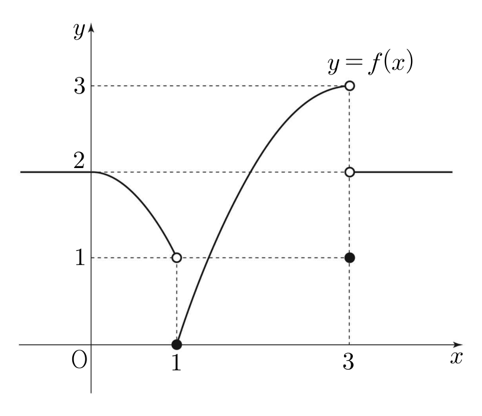
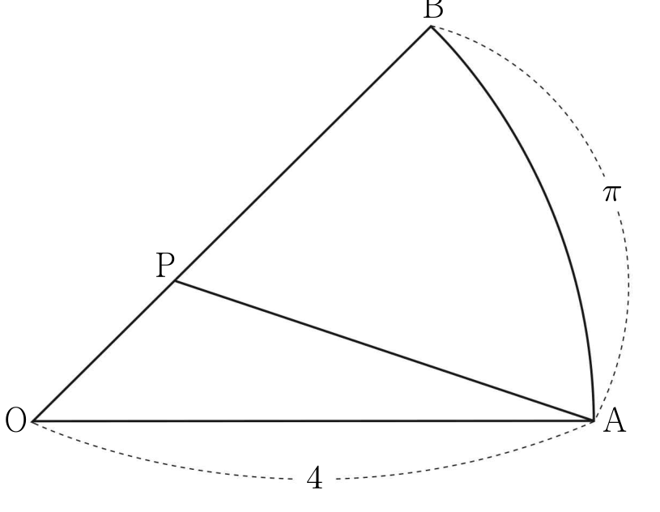
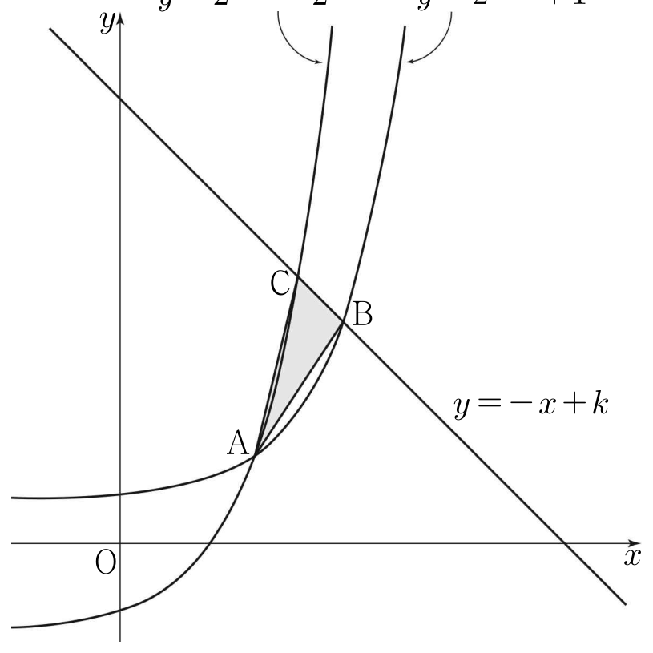
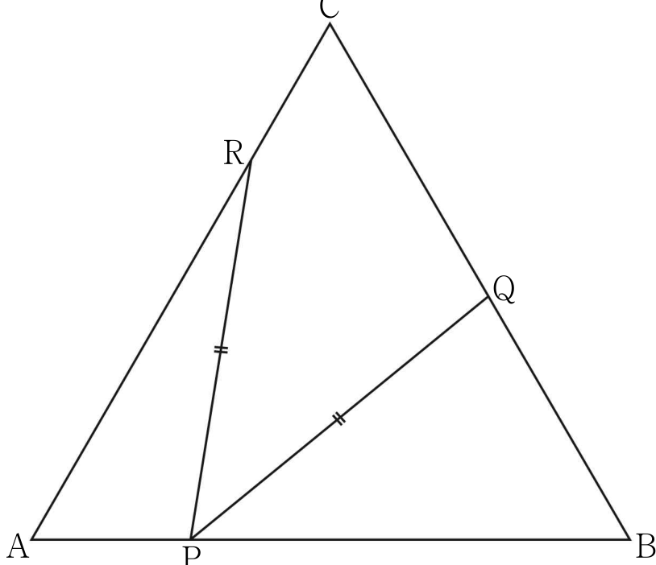

원본 (내부용)함수 \(y=f(x)\)의 그래프가 그림과 같다. 그래프에는 \(x<1\)에서 \(y=2\)인 수평선이 그려져 있고, 그 그래프는 감소하여 \((1,1)\)의 열린 점에 닿는다. \((1,0)\)에는 닫힌 점이 있고, 여기서 증가하는 곡선이 \((3,3)\)의 열린 점까지 이어진다. \(x=3\)에는 \(y=3,\ y=2\)의 열린 점과 \(y=1\)의 닫힌 점이 표시되어 있다. \(x>3\)에서는 \(y=2\)인 수평선이다. \( f(3)+\lim_{x\to1^-}f(x)\text{의 값은?} \) [3점]

① 1② 2③ 3④ 4⑤ 5
원본 정답 ②
원본 풀이 (내부용)[출제의도] 함수의 극한 이해하기
\(
f(3)+\lim_{x\to1-}f(x)=1+1=2
\)
생성기 숫자판 1/6 · G2f-09#1함수 $y=f\left(x\right)$의 그래프가 그림과 같습니다. $f\left(2\right)+\lim_{x\to 4-}f\left(x\right)$의 값으로 옳은 것을 고르세요.
① $2$② $3$③ $4$④ $5$⑤ $6$
정답③ $4$ $f\left(2\right)=0$ $x\to 4-$일 때 $f\left(x\right)\to 4$ 따라서 구하는 값은 $0+4=4$
원본 (내부용)실수 전체의 집합에서 정의된 함수 \(f(x)\)가 모든 실수 \(x\)에 대하여 부등식 \( 5x-1<(x^2+1)f(x)<5x+2 \) 를 만족시킬 때, \( \lim_{x\to\infty}xf(x) \) 의 값은? [3점]
① 1② 2③ 3④ 4⑤ 5
원본 정답 ⑤
원본 풀이 (내부용)[출제의도] 함수의 극한 이해하기
부등식 \(5x-1<(x^2+1)f(x)<5x+2\)에서
\(
\frac{5x-1}{x^2+1}<f(x)<\frac{5x+2}{x^2+1}
\)
\(x>0\)일 때,
\(
\frac{x(5x-1)}{x^2+1}<xf(x)<\frac{x(5x+2)}{x^2+1}
\)
이고
\(
\lim_{x\to\infty}\frac{x(5x-1)}{x^2+1}
=\lim_{x\to\infty}\frac{x(5x+2)}{x^2+1}=5
\)
함수의 극한의 대소 관계에 의해
\(
\lim_{x\to\infty}xf(x)=5
\)
생성기 숫자판 1/6 · G2M6-01#5실수 전체의 집합에서 정의된 함수 $f\left(x\right)$가 모든 실수 $x$에 대하여 부등식 $9x-3<\left(x^{2}+8\right)f\left(x\right)<9x+6$을 만족시킬 때, $\lim_{x\to\infty}xf\left(x\right)$의 값으로 옳은 것을 고르세요.
① $7$② $8$③ $9$④ $10$⑤ $11$
정답③ $9$ $x>0$일 때 각 변을 $x^{2}+8$로 나누고 $x$를 곱하면 $\frac{x\left(9x-3\right)}{x^{2}+8}<xf\left(x\right)<\frac{x\left(9x+6\right)}{x^{2}+8}$ $\lim_{x\to\infty}\frac{9x^{2}-3x}{x^{2}+8}=9$, $\lim_{x\to\infty}\frac{9x^{2}+6x}{x^{2}+8}=9$ 함수의 극한의 대소 관계에 의하여 $\lim_{x\to\infty}xf\left(x\right)=9$
숫자: 원본 5 1 1 5 2 → 쌍둥이 9 3 8 9 6
생성기 숫자판 2/6 · G2M6-01#5실수 전체의 집합에서 정의된 함수 $f\left(x\right)$가 모든 실수 $x$에 대하여 부등식 $5x-2<\left(x^{2}+7\right)f\left(x\right)<5x+5$를 만족시킬 때, $\lim_{x\to\infty}xf\left(x\right)$의 값으로 옳은 것을 고르세요.
① $4$② $5$③ $6$④ $7$⑤ $8$
정답② $5$ $x>0$일 때 각 변을 $x^{2}+7$로 나누고 $x$를 곱하면 $\frac{x\left(5x-2\right)}{x^{2}+7}<xf\left(x\right)<\frac{x\left(5x+5\right)}{x^{2}+7}$ $\lim_{x\to\infty}\frac{5x^{2}-2x}{x^{2}+7}=5$, $\lim_{x\to\infty}\frac{5x^{2}+5x}{x^{2}+7}=5$ 함수의 극한의 대소 관계에 의하여 $\lim_{x\to\infty}xf\left(x\right)=5$
숫자: 원본 5 1 1 5 2 → 쌍둥이 5 2 7 5 5 · 같은 수: 2 5
생성기 숫자판 3/6 · G2M6-01#5실수 전체의 집합에서 정의된 함수 $f\left(x\right)$가 모든 실수 $x$에 대하여 부등식 $12x-8<\left(x^{2}+9\right)f\left(x\right)<12x+8$을 만족시킬 때, $\lim_{x\to\infty}xf\left(x\right)$의 값으로 옳은 것을 고르세요.
① $12$② $13$③ $14$④ $15$⑤ $16$
정답① $12$ $x>0$일 때 각 변을 $x^{2}+9$로 나누고 $x$를 곱하면 $\frac{x\left(12x-8\right)}{x^{2}+9}<xf\left(x\right)<\frac{x\left(12x+8\right)}{x^{2}+9}$ $\lim_{x\to\infty}\frac{12x^{2}-8x}{x^{2}+9}=12$, $\lim_{x\to\infty}\frac{12x^{2}+8x}{x^{2}+9}=12$ 함수의 극한의 대소 관계에 의하여 $\lim_{x\to\infty}xf\left(x\right)=12$
숫자: 원본 5 1 1 5 2 → 쌍둥이 12 8 9 12 8
생성기 숫자판 4/6 · G2M6-01#5실수 전체의 집합에서 정의된 함수 $f\left(x\right)$가 모든 실수 $x$에 대하여 부등식 $2x-4<\left(x^{2}+9\right)f\left(x\right)<2x+4$를 만족시킬 때, $\lim_{x\to\infty}xf\left(x\right)$의 값으로 옳은 것을 고르세요.
① $2$② $3$③ $4$④ $5$⑤ $6$
정답① $2$ $x>0$일 때 각 변을 $x^{2}+9$로 나누고 $x$를 곱하면 $\frac{x\left(2x-4\right)}{x^{2}+9}<xf\left(x\right)<\frac{x\left(2x+4\right)}{x^{2}+9}$ $\lim_{x\to\infty}\frac{2x^{2}-4x}{x^{2}+9}=2$, $\lim_{x\to\infty}\frac{2x^{2}+4x}{x^{2}+9}=2$ 함수의 극한의 대소 관계에 의하여 $\lim_{x\to\infty}xf\left(x\right)=2$
숫자: 원본 5 1 1 5 2 → 쌍둥이 2 4 9 2 4 · 같은 수: 2
생성기 숫자판 5/6 · G2M6-01#5실수 전체의 집합에서 정의된 함수 $f\left(x\right)$가 모든 실수 $x$에 대하여 부등식 $13x-7<\left(x^{2}+5\right)f\left(x\right)<13x+4$를 만족시킬 때, $\lim_{x\to\infty}xf\left(x\right)$의 값으로 옳은 것을 고르세요.
① $13$② $14$③ $15$④ $16$⑤ $17$
정답① $13$ $x>0$일 때 각 변을 $x^{2}+5$로 나누고 $x$를 곱하면 $\frac{x\left(13x-7\right)}{x^{2}+5}<xf\left(x\right)<\frac{x\left(13x+4\right)}{x^{2}+5}$ $\lim_{x\to\infty}\frac{13x^{2}-7x}{x^{2}+5}=13$, $\lim_{x\to\infty}\frac{13x^{2}+4x}{x^{2}+5}=13$ 함수의 극한의 대소 관계에 의하여 $\lim_{x\to\infty}xf\left(x\right)=13$
숫자: 원본 5 1 1 5 2 → 쌍둥이 13 7 5 13 4 · 같은 수: 5
생성기 숫자판 6/6 · G2M6-01#5실수 전체의 집합에서 정의된 함수 $f\left(x\right)$가 모든 실수 $x$에 대하여 부등식 $13x-8<\left(x^{2}+5\right)f\left(x\right)<13x+8$을 만족시킬 때, $\lim_{x\to\infty}xf\left(x\right)$의 값으로 옳은 것을 고르세요.
① $9$② $10$③ $11$④ $12$⑤ $13$
정답⑤ $13$ $x>0$일 때 각 변을 $x^{2}+5$로 나누고 $x$를 곱하면 $\frac{x\left(13x-8\right)}{x^{2}+5}<xf\left(x\right)<\frac{x\left(13x+8\right)}{x^{2}+5}$ $\lim_{x\to\infty}\frac{13x^{2}-8x}{x^{2}+5}=13$, $\lim_{x\to\infty}\frac{13x^{2}+8x}{x^{2}+5}=13$ 함수의 극한의 대소 관계에 의하여 $\lim_{x\to\infty}xf\left(x\right)=13$
숫자: 원본 5 1 1 5 2 → 쌍둥이 13 8 5 13 8 · 같은 수: 5
8. 2020년 11월 8번 · 3점 · 수학Ⅰ 지수·로그 · G2M1-01#17
원본 (내부용)1이 아닌 양수 \(a\)가 \( \log_2 8a=\frac{2}{\log_a 2} \) 를 만족시킬 때, \(a\)의 값은? [3점]
① 4② \(4\sqrt2\)③ 8④ \(8\sqrt2\)⑤ 16
원본 정답 ③
원본 풀이 (내부용)[출제의도] 로그의 성질 이해하기
\(
\frac{1}{\log_a2}=\log_2a
\)
이므로
\(
\log_28a=\frac{2}{\log_a2}
\)
에서
\(
\log_28+\log_2a=2\log_2a
\)
\(
\log_2a=\log_28
\)
따라서 \(a=8\)
생성기 숫자판 1/6 · G2M1-01#17$1$이 아닌 양수 $a$가 $\log_{3}27a=\frac{2}{\log_{a}3}$를 만족시킬 때, $a$의 값으로 옳은 것을 고르세요.
① $9$② $24$③ $27$④ $81$⑤ $243$
정답③ $27$ $\frac{2}{\log_{a}3}=2\log_{3}a$이고 $\log_{3}27a=3+\log_{3}a$이므로 $3+\log_{3}a=2\log_{3}a$, $\log_{3}a=3$ 따라서 $a=3^{3}=27$
숫자: 원본 1 2 8 2 2 → 쌍둥이 1 3 27 2 3 · 같은 수: 1 2
생성기 숫자판 2/6 · G2M1-01#17$1$이 아닌 양수 $a$가 $\log_{3}9a=\frac{3}{\log_{a}3}$을 만족시킬 때, $a$의 값으로 옳은 것을 고르세요.
① $3$② $6$③ $9$④ $12$⑤ $27$
정답① $3$ $\frac{3}{\log_{a}3}=3\log_{3}a$이고 $\log_{3}9a=2+\log_{3}a$이므로 $2+\log_{3}a=3\log_{3}a$, $\log_{3}a=1$ 따라서 $a=3^{1}=3$
숫자: 원본 1 2 8 2 2 → 쌍둥이 1 3 9 3 3 · 같은 수: 1
생성기 숫자판 3/6 · G2M1-01#17$1$이 아닌 양수 $a$가 $\log_{3}81a=\frac{3}{\log_{a}3}$을 만족시킬 때, $a$의 값으로 옳은 것을 고르세요.
① $3$② $6$③ $9$④ $27$⑤ $81$
정답③ $9$ $\frac{3}{\log_{a}3}=3\log_{3}a$이고 $\log_{3}81a=4+\log_{3}a$이므로 $4+\log_{3}a=3\log_{3}a$, $\log_{3}a=2$ 따라서 $a=3^{2}=9$
숫자: 원본 1 2 8 2 2 → 쌍둥이 1 3 81 3 3 · 같은 수: 1
생성기 숫자판 4/6 · G2M1-01#17$1$이 아닌 양수 $a$가 $\log_{2}16a=\frac{3}{\log_{a}2}$을 만족시킬 때, $a$의 값으로 옳은 것을 고르세요.
① $4$② $6$③ $8$④ $12$⑤ $16$
정답① $4$ $\frac{3}{\log_{a}2}=3\log_{2}a$이고 $\log_{2}16a=4+\log_{2}a$이므로 $4+\log_{2}a=3\log_{2}a$, $\log_{2}a=2$ 따라서 $a=2^{2}=4$
숫자: 원본 1 2 8 2 2 → 쌍둥이 1 2 16 3 2 · 같은 수: 1 2
생성기 숫자판 5/6 · G2M1-01#17$1$이 아닌 양수 $a$가 $\log_{3}9a=\frac{2}{\log_{a}3}$를 만족시킬 때, $a$의 값으로 옳은 것을 고르세요.
① $3$② $9$③ $12$④ $27$⑤ $81$
정답② $9$ $\frac{2}{\log_{a}3}=2\log_{3}a$이고 $\log_{3}9a=2+\log_{3}a$이므로 $2+\log_{3}a=2\log_{3}a$, $\log_{3}a=2$ 따라서 $a=3^{2}=9$
숫자: 원본 1 2 8 2 2 → 쌍둥이 1 3 9 2 3 · 같은 수: 1 2
생성기 숫자판 6/6 · G2M1-01#17$1$이 아닌 양수 $a$가 $\log_{3}81a=\frac{2}{\log_{a}3}$를 만족시킬 때, $a$의 값으로 옳은 것을 고르세요.
① $27$② $75$③ $78$④ $81$⑤ $243$
정답④ $81$ $\frac{2}{\log_{a}3}=2\log_{3}a$이고 $\log_{3}81a=4+\log_{3}a$이므로 $4+\log_{3}a=2\log_{3}a$, $\log_{3}a=4$ 따라서 $a=3^{4}=81$
숫자: 원본 1 2 8 2 2 → 쌍둥이 1 3 81 2 3 · 같은 수: 1 2
9. 2020년 11월 9번 · 3점 · 수학Ⅱ 함수의 극한·연속 · G2M6-01#10
원본 (내부용)다항함수 \(f(x)\)가 \( \lim_{x\to2}(x+1)f(x)=6 \) 을 만족시킨다. \( \lim_{x\to2}(x^2+ax-1)f(x)=26 \) 일 때, \(a+f(2)\)의 값은? (단, \(a\)는 상수이다.) [3점]
① 6② 7③ 8④ 9⑤ 10
원본 정답 ②
원본 풀이 (내부용)[출제의도] 함수의 연속 이해하기
\(f(x)\)가 다항함수이므로
\(
\lim_{x\to2}(x+1)f(x)
=\lim_{x\to2}(x+1)\times\lim_{x\to2}f(x)
=3\times\lim_{x\to2}f(x)=6
\)
에서 \(\lim_{x\to2}f(x)=2\)이고 \(f(2)=2\)
\(
\lim_{x\to2}(x^2+ax-1)f(x)
=\lim_{x\to2}(x^2+ax-1)\times\lim_{x\to2}f(x)
=(2a+3)\times2=26
\)
에서 \(a=5\)
따라서 \(a+f(2)=5+2=7\)
생성기 숫자판 1/6 · G2M6-01#10다항함수 $f\left(x\right)$에 대하여 $\lim_{x\to 4}\left(x-3\right)f\left(x\right)=-5$, $\lim_{x\to 4}\left(x^{2}+ax+5\right)f\left(x\right)=95$일 때, $a+f\left(4\right)$의 값으로 옳은 것을 고르세요. (단, $a$는 상수입니다.)
원본 (내부용)함수 \(f(x)=\log_2(x+a)+b\)의 역함수를 \(g(x)\)라 하자. 곡선 \(y=g(x)\)의 점근선이 직선 \(y=1\)이고 곡선 \(y=g(x)\)가 점 \((3,2)\)를 지날 때, \(a+b\)의 값은? (단, \(a,b\)는 상수이다.) [3점]
① 1② 2③ 3④ 4⑤ 5
원본 정답 ②
원본 풀이 (내부용)[출제의도] 지수함수의 그래프 추론하기
함수 \(g(x)\)는 함수 \(f(x)=\log_2(x+a)+b\)의 역함수이므로
\(
g(x)=2^{x-b}-a
\)
곡선 \(y=g(x)\)의 점근선이 직선 \(y=-a\)이므로
\(
a=-1
\)
곡선 \(y=g(x)\)가 점 \((3,2)\)를 지나므로
\(
g(3)=2^{3-b}+1=2\text{에서 }b=3
\)
따라서 \(a+b=-1+3=2\)
생성기 숫자판 1/6 · G2M1-01b#5함수 $f\left(x\right)=\log_{2}\left(x+a\right)+b$의 역함수 $g\left(x\right)$에 대하여 곡선 $y=g\left(x\right)$의 점근선이 직선 $y=2$이고 곡선 $y=g\left(x\right)$가 점 $\left(2,\ 10\right)$을 지날 때, $a+b$의 값으로 옳은 것을 고르세요. (단, $a$, $b$는 상수입니다.)
① $-3$② $-2$③ $-1$④ $0$⑤ $1$
정답① $-3$ 곡선 $y=g\left(x\right)$의 점근선이 직선 $y=2$이므로 곡선 $y=f\left(x\right)$의 점근선은 직선 $x=2$ $-a=2$에서 $a=-2$ 곡선 $y=g\left(x\right)$가 점 $\left(2,\ 10\right)$를 지나므로 곡선 $y=f\left(x\right)$는 점 $\left(10,\ 2\right)$를 지납니다. $\log_{2}8+b=2$, $3+b=2$이므로 $b=-1$ 따라서 $a+b=-3$
숫자: 원본 2 1 3 2 → 쌍둥이 2 2 2 10 · 같은 수: 2
생성기 숫자판 2/6 · G2M1-01b#5함수 $f\left(x\right)=\log_{3}\left(x+a\right)+b$의 역함수 $g\left(x\right)$에 대하여 곡선 $y=g\left(x\right)$의 점근선이 직선 $y=-3$이고 곡선 $y=g\left(x\right)$가 점 $\left(1,\ -2\right)$를 지날 때, $a+b$의 값으로 옳은 것을 고르세요. (단, $a$, $b$는 상수입니다.)
① $4$② $5$③ $6$④ $7$⑤ $8$
정답① $4$ 곡선 $y=g\left(x\right)$의 점근선이 직선 $y=-3$이므로 곡선 $y=f\left(x\right)$의 점근선은 직선 $x=-3$ $-a=-3$에서 $a=3$ 곡선 $y=g\left(x\right)$가 점 $\left(1,\ -2\right)$를 지나므로 곡선 $y=f\left(x\right)$는 점 $\left(-2,\ 1\right)$를 지납니다. $\log_{3}1+b=1$, $0+b=1$이므로 $b=1$ 따라서 $a+b=4$
숫자: 원본 2 1 3 2 → 쌍둥이 3 3 1 2 · 같은 수: 1 2 3
생성기 숫자판 3/6 · G2M1-01b#5함수 $f\left(x\right)=\log_{2}\left(x+a\right)+b$의 역함수 $g\left(x\right)$에 대하여 곡선 $y=g\left(x\right)$의 점근선이 직선 $y=3$이고 곡선 $y=g\left(x\right)$가 점 $\left(4,\ 11\right)$을 지날 때, $a+b$의 값으로 옳은 것을 고르세요. (단, $a$, $b$는 상수입니다.)
① $-4$② $-3$③ $-2$④ $-1$⑤ $0$
정답③ $-2$ 곡선 $y=g\left(x\right)$의 점근선이 직선 $y=3$이므로 곡선 $y=f\left(x\right)$의 점근선은 직선 $x=3$ $-a=3$에서 $a=-3$ 곡선 $y=g\left(x\right)$가 점 $\left(4,\ 11\right)$를 지나므로 곡선 $y=f\left(x\right)$는 점 $\left(11,\ 4\right)$를 지납니다. $\log_{2}8+b=4$, $3+b=4$이므로 $b=1$ 따라서 $a+b=-2$
숫자: 원본 2 1 3 2 → 쌍둥이 2 3 4 11 · 같은 수: 2 3
생성기 숫자판 4/6 · G2M1-01b#5함수 $f\left(x\right)=\log_{2}\left(x+a\right)+b$의 역함수 $g\left(x\right)$에 대하여 곡선 $y=g\left(x\right)$의 점근선이 직선 $y=-1$이고 곡선 $y=g\left(x\right)$가 점 $\left(4,\ 0\right)$을 지날 때, $a+b$의 값으로 옳은 것을 고르세요. (단, $a$, $b$는 상수입니다.)
① $5$② $6$③ $7$④ $8$⑤ $9$
정답① $5$ 곡선 $y=g\left(x\right)$의 점근선이 직선 $y=-1$이므로 곡선 $y=f\left(x\right)$의 점근선은 직선 $x=-1$ $-a=-1$에서 $a=1$ 곡선 $y=g\left(x\right)$가 점 $\left(4,\ 0\right)$를 지나므로 곡선 $y=f\left(x\right)$는 점 $\left(0,\ 4\right)$를 지납니다. $\log_{2}1+b=4$, $0+b=4$이므로 $b=4$ 따라서 $a+b=5$
숫자: 원본 2 1 3 2 → 쌍둥이 2 1 4 0 · 같은 수: 1 2
생성기 숫자판 5/6 · G2M1-01b#5함수 $f\left(x\right)=\log_{3}\left(x+a\right)+b$의 역함수 $g\left(x\right)$에 대하여 곡선 $y=g\left(x\right)$의 점근선이 직선 $y=3$이고 곡선 $y=g\left(x\right)$가 점 $\left(1,\ 4\right)$를 지날 때, $a+b$의 값으로 옳은 것을 고르세요. (단, $a$, $b$는 상수입니다.)
① $-4$② $-3$③ $-2$④ $-1$⑤ $0$
정답③ $-2$ 곡선 $y=g\left(x\right)$의 점근선이 직선 $y=3$이므로 곡선 $y=f\left(x\right)$의 점근선은 직선 $x=3$ $-a=3$에서 $a=-3$ 곡선 $y=g\left(x\right)$가 점 $\left(1,\ 4\right)$를 지나므로 곡선 $y=f\left(x\right)$는 점 $\left(4,\ 1\right)$를 지납니다. $\log_{3}1+b=1$, $0+b=1$이므로 $b=1$ 따라서 $a+b=-2$
숫자: 원본 2 1 3 2 → 쌍둥이 3 3 1 4 · 같은 수: 1 3
생성기 숫자판 6/6 · G2M1-01b#5함수 $f\left(x\right)=\log_{3}\left(x+a\right)+b$의 역함수 $g\left(x\right)$에 대하여 곡선 $y=g\left(x\right)$의 점근선이 직선 $y=-1$이고 곡선 $y=g\left(x\right)$가 점 $\left(3,\ 8\right)$을 지날 때, $a+b$의 값으로 옳은 것을 고르세요. (단, $a$, $b$는 상수입니다.)
① $-2$② $-1$③ $0$④ $1$⑤ $2$
정답⑤ $2$ 곡선 $y=g\left(x\right)$의 점근선이 직선 $y=-1$이므로 곡선 $y=f\left(x\right)$의 점근선은 직선 $x=-1$ $-a=-1$에서 $a=1$ 곡선 $y=g\left(x\right)$가 점 $\left(3,\ 8\right)$를 지나므로 곡선 $y=f\left(x\right)$는 점 $\left(8,\ 3\right)$를 지납니다. $\log_{3}9+b=3$, $2+b=3$이므로 $b=1$ 따라서 $a+b=2$
숫자: 원본 2 1 3 2 → 쌍둥이 3 1 3 8 · 같은 수: 1 3
14. 2020년 11월 14번 · 4점 · 수학Ⅰ 삼각함수 · 4점 쌍둥이
원본 (내부용)그림과 같이 반지름의 길이가 4, 호의 길이가 \(\pi\)인 부채꼴 \(OAB\)가 있다. 부채꼴 \(OAB\)의 넓이를 \(S\), 선분 \(OB\) 위의 점 \(P\)에 대하여 삼각형 \(OAP\)의 넓이를 \(T\)라 하자. \(\frac{S}{T}=\pi\)일 때, 선분 \(OP\)의 길이는? (단, 점 \(P\)는 점 \(O\)가 아니다.) [4점] 그림: 부채꼴의 중심은 \(O\), 반지름은 \(OA=OB=4\), 호 \(BA\)의 길이는 \(\pi\)이다. \(P\)는 선분 \(OB\) 위에 있고, 선분 \(OP\)와 \(PA\)가 그려져 있다.

① \(\frac{\sqrt2}{2}\)② \(\frac34\sqrt2\)③ \(\sqrt2\)④ \(\frac54\sqrt2\)⑤ \(\frac32\sqrt2\)
원본 정답 ③
원본 풀이 (내부용)[출제의도] 도형을 활용하여 문제해결하기
부채꼴 \(OAP\)의 중심각의 크기를 \(\theta\)라 하면
\(
\pi=4\theta\text{에서 }\theta=\frac{\pi}{4}
\)
\(
S=\frac12\times4\times\pi=2\pi
\)
\(
T=\frac12\times\overline{OP}\times4\times\sin\frac{\pi}{4}
=\sqrt2\times\overline{OP}
\)
\(
\frac{S}{T}=\pi\text{이므로 }\overline{OP}=\sqrt2
\)
쌍둥이 1/5 · 4점 쌍둥이반지름의 길이가 $6$, 호의 길이가 $2\pi$인 부채꼴 $OAB$가 있습니다. 부채꼴 $OAB$의 넓이를 $S$, 선분 $OB$ 위의 점 $P$에 대하여 삼각형 $OAP$의 넓이를 $T$라 합니다. $\frac{S}{T}=\pi$일 때, 선분 $OP$의 길이로 옳은 것을 고르세요. (단, 점 $P$는 점 $O$가 아닙니다.)
① $\frac{2\sqrt{3}}{3}$② $\sqrt{3}$③ $\frac{4\sqrt{3}}{3}$④ $\frac{5\sqrt{3}}{3}$⑤ $2\sqrt{3}$
쌍둥이 2/5 · 4점 쌍둥이반지름의 길이가 $6$, 호의 길이가 $\pi$인 부채꼴 $OAB$가 있습니다. 부채꼴 $OAB$의 넓이를 $S$, 선분 $OB$ 위의 점 $P$에 대하여 삼각형 $OAP$의 넓이를 $T$라 합니다. $\frac{S}{T}=\pi$일 때, 선분 $OP$의 길이로 옳은 것을 고르세요. (단, 점 $P$는 점 $O$가 아닙니다.)
쌍둥이 3/5 · 4점 쌍둥이반지름의 길이가 $8$, 호의 길이가 $2\pi$인 부채꼴 $OAB$가 있습니다. 부채꼴 $OAB$의 넓이를 $S$, 선분 $OB$ 위의 점 $P$에 대하여 삼각형 $OAP$의 넓이를 $T$라 합니다. $\frac{S}{T}=\pi$일 때, 선분 $OP$의 길이로 옳은 것을 고르세요. (단, 점 $P$는 점 $O$가 아닙니다.)
① $\frac{3\sqrt{2}}{2}$② $2\sqrt{2}$③ $\frac{5\sqrt{2}}{2}$④ $3\sqrt{2}$⑤ $\frac{7\sqrt{2}}{2}$
쌍둥이 1/5 · 4점 쌍둥이$8\sin\theta-15\tan\theta=15$일 때, $\sin\theta+\cos\theta$의 값으로 옳은 것을 고르세요.
① $-\frac{1}{2}$② $-\frac{1}{4}$③ $0$④ $\frac{1}{4}$⑤ $\frac{1}{2}$
정답② $-\frac{1}{4}$ 양변에 $\cos\theta$를 곱하면 $8\sin\theta\cos\theta-15\sin\theta=15\cos\theta$, 즉 $8\sin\theta\cos\theta=15(\sin\theta+\cos\theta)$ $\sin\theta+\cos\theta=t$라 하면 $\sin\theta\cos\theta=\frac{t^{2}-1}{2}$ $8\times\frac{t^{2}-1}{2}=15t$에서 $8t^{2}-30t-8=0$이므로 $t=-\frac{1}{4}$ 또는 $t=4$ $|\sin\theta+\cos\theta|\le\sqrt{2}$이므로 $t=4$는 될 수 없습니다. 따라서 $\sin\theta+\cos\theta=-\frac{1}{4}$
숫자: 원본 3 4 4 → 쌍둥이 8 15 15
쌍둥이 2/5 · 4점 쌍둥이$12\sin\theta-5\tan\theta=5$일 때, $\sin\theta+\cos\theta$의 값으로 옳은 것을 고르세요.
① $-\frac{4}{3}$② $-1$③ $-\frac{2}{3}$④ $-\frac{1}{3}$⑤ $0$
정답③ $-\frac{2}{3}$ 양변에 $\cos\theta$를 곱하면 $12\sin\theta\cos\theta-5\sin\theta=5\cos\theta$, 즉 $12\sin\theta\cos\theta=5(\sin\theta+\cos\theta)$ $\sin\theta+\cos\theta=t$라 하면 $\sin\theta\cos\theta=\frac{t^{2}-1}{2}$ $12\times\frac{t^{2}-1}{2}=5t$에서 $12t^{2}-10t-12=0$이므로 $t=-\frac{2}{3}$ 또는 $t=\frac{3}{2}$ $|\sin\theta+\cos\theta|\le\sqrt{2}$이므로 $t=\frac{3}{2}$은 될 수 없습니다. 따라서 $\sin\theta+\cos\theta=-\frac{2}{3}$
숫자: 원본 3 4 4 → 쌍둥이 12 5 5
쌍둥이 3/5 · 4점 쌍둥이$5\sin\theta-12\tan\theta=12$일 때, $\sin\theta+\cos\theta$의 값으로 옳은 것을 고르세요.
① $-\frac{4}{5}$② $-\frac{3}{5}$③ $-\frac{2}{5}$④ $-\frac{1}{5}$⑤ $0$
정답④ $-\frac{1}{5}$ 양변에 $\cos\theta$를 곱하면 $5\sin\theta\cos\theta-12\sin\theta=12\cos\theta$, 즉 $5\sin\theta\cos\theta=12(\sin\theta+\cos\theta)$ $\sin\theta+\cos\theta=t$라 하면 $\sin\theta\cos\theta=\frac{t^{2}-1}{2}$ $5\times\frac{t^{2}-1}{2}=12t$에서 $5t^{2}-24t-5=0$이므로 $t=-\frac{1}{5}$ 또는 $t=5$ $|\sin\theta+\cos\theta|\le\sqrt{2}$이므로 $t=5$는 될 수 없습니다. 따라서 $\sin\theta+\cos\theta=-\frac{1}{5}$
숫자: 원본 3 4 4 → 쌍둥이 5 12 12
쌍둥이 4/5 · 4점 쌍둥이$7\sin\theta-24\tan\theta=24$일 때, $\sin\theta\cos\theta$의 값을 구하세요.
① $-\frac{25}{49}$② $-\frac{24}{49}$③ $-\frac{21}{49}$④ $-\frac{20}{49}$⑤ $-\frac{18}{49}$
정답② $-\frac{24}{49}$ $u=\sin\theta+\cos\theta$, $v=\sin\theta\cos\theta$라 두고 원식에 $\cos\theta$를 곱하면 $7v=24u$이다. 또 $u^2=1+2v$이므로 $7u^2-48u-7=0$이다. 근은 $u=7,-\frac17$이다. $|u|\le\sqrt2$이므로 $u=-\frac17$이고, $v=\frac{24u}{7}=-\frac{24}{49}$이다.
숫자: 원본 3 4 4 → 쌍둥이 7 24 24
쌍둥이 5/5 · 4점 쌍둥이$20\sin\theta-21\tan\theta=21$일 때, $\sin\theta\cos\theta$의 값을 구하세요.
① $-\frac{24}{50}$② $-\frac{21}{50}$③ $-\frac{20}{50}$④ $-\frac{18}{50}$⑤ $-\frac{16}{50}$
정답② $-\frac{21}{50}$ $u=\sin\theta+\cos\theta$, $v=\sin\theta\cos\theta$라 두고 원식에 $\cos\theta$를 곱하면 $20v=21u$이다. 또 $u^2=1+2v$이므로 $10u^2-21u-10=0$이다. 근은 $u=\frac52,-\frac25$이다. $|u|\le\sqrt2$이므로 $u=-\frac25$이고, $v=\frac{21u}{20}=-\frac{21}{50}$이다.
숫자: 원본 3 4 4 → 쌍둥이 20 21 21
17. 2020년 11월 17번 · 4점 · 수학Ⅰ 수열 · 4점 쌍둥이
원본 (내부용)\(a_3=1\)인 등차수열 \(\{a_n\}\)이 \( \sum_{k=1}^{20}a_{2k}-\sum_{k=1}^{12}a_{2k+8}=48 \) 을 만족시킬 때, \(a_{39}\)의 값은? [4점]
① 11② 12③ 13④ 14⑤ 15
원본 정답 ①
원본 풀이 (내부용)[출제의도] 등차수열을 활용하여 문제해결하기
\(
\sum_{k=1}^{20}a_{2k}-\sum_{k=1}^{12}a_{2k+8}
\)
\(
=(a_2+a_4+\cdots+a_{40})-(a_{10}+a_{12}+\cdots+a_{32})
\)
\(
=a_2+a_4+a_6+a_8+a_{34}+a_{36}+a_{38}+a_{40}
\)
등차중항의 성질에 의해 등차수열 \(\{a_n\}\)은 \(m+l=42\)인 두 자연수 \(m,l\)에 대하여
\(
a_m+a_l=2a_{21}
\)
을 만족시키므로
\(
\begin{aligned}
\sum_{k=1}^{20}a_{2k}-\sum_{k=1}^{12}a_{2k+8}
&=(a_2+a_{40})+(a_4+a_{38})+(a_6+a_{36})+(a_8+a_{34})\\
&=2a_{21}+2a_{21}+2a_{21}+2a_{21}=48
\end{aligned}
\)
그러므로 \(a_{21}=6\)이고 \(a_3+a_{39}=2a_{21}=12\)
따라서 \(a_{39}=12-a_3=11\)
쌍둥이 1/5 · 4점 쌍둥이$a_{2}=-1$인 등차수열 $\left\{a_{n}\right\}$이 $\sum_{k=1}^{15}a_{2k}-\sum_{k=1}^{9}a_{2k+6}=30$을 만족시킬 때, $a_{30}$의 값으로 옳은 것을 고르세요.
① $7$② $8$③ $9$④ $10$⑤ $11$
정답⑤ $11$ $\sum_{k=1}^{15}a_{2k}=a_{2}+a_{4}+\cdots+a_{30}$, $\sum_{k=1}^{9}a_{2k+6}=a_{8}+a_{10}+\cdots+a_{24}$ 두 합의 차는 $a_{2}+a_{4}+a_{6}+a_{26}+a_{28}+a_{30}$ 등차수열에서 $a_{2}+a_{30},\ a_{4}+a_{28},\ a_{6}+a_{26}$은 모두 $2a_{16}$과 같으므로 $6a_{16}=30$, $a_{16}=5$ 공차를 $d$라 하면 $a_{16}-a_{2}=14d=6$에서 $d=\frac{3}{7}$ $a_{30}=a_{16}+14d=5+14\times \frac{3}{7}$ $=11$
쌍둥이 4/5 · 4점 쌍둥이$a_{3}=1$인 등차수열 $\{a_n\}$이 $\sum_{k=1}^{15}a_{2k}-\sum_{k=1}^{11}a_{2k+8}=28$을 만족시킬 때, $a_{25}$의 값을 구하세요.
① $21$② $22$③ $23$④ $24$⑤ $25$
정답③ $23$ 두 합에서 $a_{10},a_{12},\ldots,a_{30}$이 소거되어 차는 $a_2+a_4+a_6+a_8=4a_1+16d$입니다. $a_3=a_1+2d=1$이므로 $a_1=1-2d$이고, $4a_1+16d=28$에서 $d=1$, $a_1=-1$입니다. 따라서 $a_{25}=a_1+24d=23$입니다.
쌍둥이 5/5 · 4점 쌍둥이$a_{4}=4$인 등차수열 $\{a_n\}$이 $\sum_{k=1}^{14}a_{2k}-\sum_{k=1}^{10}a_{2k+6}=52$를 만족시킬 때, $a_{26}$의 값을 구하세요.
① $34$② $35$③ $36$④ $37$⑤ $38$
정답④ $37$ 두 합에서 $a_8,a_{10},\ldots,a_{26}$이 소거되어 차는 $a_2+a_4+a_6+a_{28}=4a_1+36d$입니다. $a_4=a_1+3d=4$이므로 $a_1=4-3d$이고, $4a_1+36d=52$에서 $d=\frac{3}{2}$, $a_1=-\frac{1}{2}$입니다. 따라서 $a_{26}=a_1+25d=37$입니다.
원본 (내부용)그림과 같이 두 곡선 \(y=2^{x-3}+1\)과 \(y=2^{x-1}-2\)가 만나는 점을 \(A\)라 하자. 상수 \(k\)에 대하여 직선 \(y=-x+k\)가 두 곡선 \(y=2^{x-3}+1,\ y=2^{x-1}-2\)와 만나는 점을 각각 \(B,\ C\)라 할 때, 선분 \(BC\)의 길이는 \(\sqrt2\)이다. 삼각형 \(ABC\)의 넓이는? (단, 점 \(B\)의 \(x\)좌표는 점 \(A\)의 \(x\)좌표보다 크다.) [4점] 그림: 두 곡선 \(y=2^{x-3}+1\), \(y=2^{x-1}-2\)와 직선 \(y=-x+k\)가 표시되어 있다. 두 곡선의 교점은 \(A\), 직선과 곡선의 교점은 각각 \(B,\ C\)이며, 선분 \(BC\)와 삼각형 \(ABC\)가 표시되어 있다.

① 2② \(\frac94\)③ \(\frac52\)④ \(\frac{11}{4}\)⑤ 3
원본 정답 ③
원본 풀이 (내부용)[출제의도] 지수함수의 그래프를 활용하여 문제해결하기
점 \(A\)는 두 곡선 \(y=2^{x-3}+1\)과 \(y=2^{x-1}-2\)가 만나는 점이므로
\(
2^{x-3}+1=2^{x-1}-2,\quad 2^{x-3}=3\text{에서 }x=3
\)
그러므로 점 \(A\)의 좌표는 \(A(3,2)\)
점 \(B\)의 \(x\)좌표를 \(a\)라 하면 점 \(B\)의 좌표는 \(B(a,2^{a-3}+1)\)
두 점 \(B,C\)는 기울기가 \(-1\)인 직선 위의 점이고
\(
\overline{BC}=\sqrt2
\)
이므로 점 \(C\)의 좌표는 \(C(a-1,2^{a-3}+2)\)
점 \(C\)는 곡선 \(y=2^{x-1}-2\) 위의 점이므로
\(
2^{a-3}+2=2^{a-2}-2,\quad 2^{a-3}=4\text{에서 }a=5
\)
점 \(B(5,5)\)는 직선 \(y=-x+k\) 위의 점이므로 \(k=10\)
점 \(A(3,2)\)와 직선 \(y=-x+10\) 사이의 거리는
\(
\frac{|3+2-10|}{\sqrt{1^2+1^2}}=\frac5{\sqrt2}
\)
따라서 삼각형 \(ABC\)의 넓이는
\(
\frac12\times\sqrt2\times\frac5{\sqrt2}=\frac52
\)
---
쌍둥이 1/5 · 4점 쌍둥이그림과 같이 두 곡선 $y=2^{x-2}-1$과 $y=2^{x}-4$가 만나는 점을 $A$라 하자. 상수 $k$에 대하여 직선 $y=-x+k$가 두 곡선 $y=2^{x-2}-1$, $y=2^{x}-4$와 만나는 점을 각각 $B$, $C$라 할 때, 선분 $BC$의 길이는 $\sqrt{2}$이다. $\overline{AB}^{2}$의 값은? (단, 점 $B$의 $x$좌표는 점 $A$의 $x$좌표보다 크다.)
① $11$② $12$③ $13$④ $14$⑤ $15$
정답③ $13$ $u=2^{x-2}$라 하면 두 곡선은 $y=u-1$, $y=4u-4$이므로 교점에서 $3u=3$, $u=1$ → $A(2,\ 0)$ $B(t,\ 2^{t-2}-1)$라 하면 기울기 $-1$인 직선 위에서 $\overline{BC}=\sqrt{2}$이므로 $C(t-1,\ 2^{t-2})$ $C$가 둘째 곡선 위에 있으므로 $2\times 2^{t-2}-4=2^{t-2}$, $2^{t-2}=4$, $t=4$ → $B(4,\ 3)$, $C(3,\ 4)$, $k=7$ 따라서 $\overline{AB}^{2}$의 값은 $13$
쌍둥이 2/5 · 4점 쌍둥이그림과 같이 두 곡선 $y=2^{x-5}+1$과 $y=2^{x-3}-2$가 만나는 점을 $A$라 하자. 상수 $k$에 대하여 직선 $y=-x+k$가 두 곡선 $y=2^{x-5}+1$, $y=2^{x-3}-2$와 만나는 점을 각각 $B$, $C$라 할 때, 선분 $BC$의 길이는 $\sqrt{2}$이다. 상수 $k$의 값은? (단, 점 $B$의 $x$좌표는 점 $A$의 $x$좌표보다 크다.)
① $11$② $12$③ $13$④ $14$⑤ $15$
정답② $12$ $u=2^{x-5}$라 하면 두 곡선은 $y=u+1$, $y=4u-2$이므로 교점에서 $3u=3$, $u=1$ → $A(5,\ 2)$ $B(t,\ 2^{t-5}+1)$라 하면 기울기 $-1$인 직선 위에서 $\overline{BC}=\sqrt{2}$이므로 $C(t-1,\ 2^{t-5}+2)$ $C$가 둘째 곡선 위에 있으므로 $2\times 2^{t-5}-2=2^{t-5}+2$, $2^{t-5}=4$, $t=7$ → $B(7,\ 5)$, $C(6,\ 6)$, $k=12$ 따라서 상수 $k$의 값은 $12$
쌍둥이 3/5 · 4점 쌍둥이그림과 같이 두 곡선 $y=2^{x-2}+3$과 $y=2^{x}$이 만나는 점을 $A$라 하자. 상수 $k$에 대하여 직선 $y=-x+k$가 두 곡선 $y=2^{x-2}+3$, $y=2^{x}$과 만나는 점을 각각 $B$, $C$라 할 때, 선분 $BC$의 길이는 $\sqrt{2}$이다. 상수 $k$의 값은? (단, 점 $B$의 $x$좌표는 점 $A$의 $x$좌표보다 크다.)
① $10$② $11$③ $12$④ $13$⑤ $14$
정답② $11$ $u=2^{x-2}$라 하면 두 곡선은 $y=u+3$, $y=4u$이므로 교점에서 $3u=3$, $u=1$ → $A(2,\ 4)$ $B(t,\ 2^{t-2}+3)$라 하면 기울기 $-1$인 직선 위에서 $\overline{BC}=\sqrt{2}$이므로 $C(t-1,\ 2^{t-2}+4)$ $C$가 둘째 곡선 위에 있으므로 $2\times 2^{t-2}=2^{t-2}+4$, $2^{t-2}=4$, $t=4$ → $B(4,\ 7)$, $C(3,\ 8)$, $k=11$ 따라서 상수 $k$의 값은 $11$
쌍둥이 4/5 · 4점 쌍둥이그림과 같이 두 곡선 $y=2^{x-1}+2$와 $y=2^{x+1}-1$이 만나는 점을 $A$라 하자. 상수 $k$에 대하여 직선 $y=-x+k$가 두 곡선 $y=2^{x-1}+2$, $y=2^{x+1}-1$과 만나는 점을 각각 $B$, $C$라 할 때, 선분 $BC$의 길이는 $\sqrt{2}$이다. 점 $B$의 $x$좌표와 점 $C$의 $y$좌표의 합은? (단, 점 $B$의 $x$좌표는 점 $A$의 $x$좌표보다 크다.)
① $10$② $11$③ $12$④ $13$⑤ $14$
정답① $10$ $u=2^{x-1}$라 하면 두 곡선은 $y=u+2$, $y=4u-1$이므로 교점에서 $3u=3$, $u=1$ → $A(1,\ 3)$ $B(t,\ 2^{t-1}+2)$라 하면 기울기 $-1$인 직선 위에서 $\overline{BC}=\sqrt{2}$이므로 $C(t-1,\ 2^{t-1}+3)$ $C$가 둘째 곡선 위에 있으므로 $2\times 2^{t-1}-1=2^{t-1}+3$, $2^{t-1}=4$, $t=3$ → $B(3,\ 6)$, $C(2,\ 7)$, $k=9$ 따라서 점 $B$의 $x$좌표와 점 $C$의 $y$좌표의 합은 $10$
쌍둥이 5/5 · 4점 쌍둥이그림과 같이 두 곡선 $y=2^{x-4}$과 $y=2^{x-2}-3$이 만나는 점을 $A$라 하자. 상수 $k$에 대하여 직선 $y=-x+k$가 두 곡선 $y=2^{x-4}$, $y=2^{x-2}-3$과 만나는 점을 각각 $B$, $C$라 할 때, 선분 $BC$의 길이는 $\sqrt{2}$이다. 삼각형 $ABC$의 넓이은? (단, 점 $B$의 $x$좌표는 점 $A$의 $x$좌표보다 크다.)
① $\frac{1}{2}$② $1$③ $\frac{3}{2}$④ $2$⑤ $\frac{5}{2}$
정답⑤ $\frac{5}{2}$ $u=2^{x-4}$라 하면 두 곡선은 $y=u$, $y=4u-3$이므로 교점에서 $3u=3$, $u=1$ → $A(4,\ 1)$ $B(t,\ 2^{t-4})$라 하면 기울기 $-1$인 직선 위에서 $\overline{BC}=\sqrt{2}$이므로 $C(t-1,\ 2^{t-4}+1)$ $C$가 둘째 곡선 위에 있으므로 $2\times 2^{t-4}-3=2^{t-4}+1$, $2^{t-4}=4$, $t=6$ → $B(6,\ 4)$, $C(5,\ 5)$, $k=10$ 따라서 삼각형 $ABC$의 넓이은 $\frac{5}{2}$
원본 (내부용)다음은 공차가 1보다 크고 \(a_3+a_5=2\)인 등차수열 \(\{a_n\}\)에 대하여 \( \sum_{k=1}^{5}(a_k^2-5|a_k|) \) 의 값이 최소가 되도록 하는 수열 \(\{a_n\}\)의 공차를 구하는 과정이다. \( a_3+a_5=2\text{에서 }a_4=\boxed{\text{(가)}} \) 등차수열 \(\{a_n\}\)의 공차를 \(d\)라 하고 \( \sum_{k=1}^{5}a_k^2\text{과 }\sum_{k=1}^{5}|a_k| \) 를 각각 \(d\)에 대한 식으로 나타내면 \( \sum_{k=1}^{5}a_k^2=15d^2-10d+5 \) \( \sum_{k=1}^{5}|a_k|=\boxed{\text{(나)}} \) 따라서 \( \sum_{k=1}^{5}(a_k^2-5|a_k|) \) 의 값이 최소가 되도록 하는 수열 \(\{a_n\}\)의 공차는 \(\boxed{\text{(다)}}\)이다. 위의 (가), (다)에 알맞은 수를 각각 \(p,\ q\)라 하고, (나)에 알맞은 식을 \(f(d)\)라 할 때, \(f(p+2q)\)의 값은? [4점]
① 21② 23③ 25④ 27⑤ 29
원본 정답 ④
원본 풀이 (내부용)[출제의도] 수열의 합을 이용하여 추론하기
\(a_3+a_5=2a_4\)이므로 \(a_3+a_5=2\)에서 \(\boxed{a_4=1}\)
등차수열 \(\{a_n\}\)의 공차를 \(d\)라 하면
\(
a_1=1-3d,\quad a_2=1-2d,\quad a_3=1-d,\quad
a_4=1,\quad a_5=1+d
\)
\(d>1\)이므로 \(a_1<0,\ a_2<0,\ a_3<0,\ a_5>0\)
\(
\sum_{k=1}^{5}a_k^2,\qquad \sum_{k=1}^{5}|a_k|
\)
를 각각 \(d\)에 대한 식으로 나타내면
\(
\begin{aligned}
\sum_{k=1}^{5}a_k^2
&=(1-3d)^2+(1-2d)^2+(1-d)^2+1^2+(1+d)^2\\
&=15d^2-10d+5
\end{aligned}
\)
\(
\begin{aligned}
\sum_{k=1}^{5}|a_k|
&=|1-3d|+|1-2d|+|1-d|+|1|+|1+d|\\
&=(3d-1)+(2d-1)+(d-1)+1+(1+d)\\
&=7d-1
\end{aligned}
\)
그러므로
\(
\begin{aligned}
\sum_{k=1}^{5}(a_k^2-5|a_k|)
&=(15d^2-10d+5)-5(7d-1)\\
&=15d^2-45d+10\\
&=15\left(d-\frac32\right)^2-\frac{95}{4}
\end{aligned}
\)
\(d>1\)이므로 \(\sum_{k=1}^{5}(a_k^2-5|a_k|)\)의 값이 최소가 되도록 하는 수열 \(\{a_n\}\)의 공차는 \(\boxed{\frac32}\)이다.
따라서 \(p=1,\ q=\frac32,\ f(d)=7d-1\)이므로
\(
f(p+2q)=f(4)=27
\)
쌍둥이 1/5 · 4점 쌍둥이공차가 $4$보다 큰 등차수열 $\{b_n\}$이 $b_3+b_5=10$을 만족시킵니다. $\sum_{k=1}^{5}(b_k^2-27|b_k|)$의 최솟값을 구하세요.
① $-340$② $-338$③ $-\frac{6707}{20}$④ $-330$⑤ $-325$
정답③ $-\frac{6707}{20}$ $b_4=5$이고 공차를 $d>4$라 하면 다섯 항은 $5-3d,5-2d,5-d,5,5+d$입니다. 제곱의 합은 $125+15d^2$입니다. $4<d\le5$일 때 절댓값의 합은 $5+5d$이므로 식은 $15d^2-135d-10$입니다. 이 구간의 최솟값은 $d=\frac92$에서 $-\frac{1255}{4}$입니다. $d\ge5$일 때 절댓값의 합은 $7d-5$이므로 식은 $15d^2-189d+260$입니다. 이 구간의 최솟값은 $d=\frac{63}{10}$에서 $-\frac{6707}{20}$입니다. $-\frac{6707}{20}<-\frac{1255}{4}$이므로 전체 최솟값은 $-\frac{6707}{20}$입니다.
쌍둥이 2/5 · 4점 쌍둥이다음은 공차가 $2$보다 크고 $a_{3}+a_{5}=4$인 등차수열 $\{a_{n}\}$에 대하여 $\sum_{k=1}^{5}(a_{k}^{2}-10|a_{k}|)$의 값이 최소가 되도록 하는 공차를 구하는 과정입니다. $a_{3}+a_{5}=4$에서 $a_{4}=\boxed{\text{(가)}}$입니다. 공차를 $d$라 하면 $\sum_{k=1}^{5}a_{k}^{2}=15d^{2}-20d+20$, $\sum_{k=1}^{5}|a_{k}|=\boxed{\text{(나)}}$이므로 구하는 공차는 $\boxed{\text{(다)}}$입니다. (가), (다)에 알맞은 수를 각각 $p$, $q$라 하고, (나)에 알맞은 식을 $f(d)$라 할 때, $f(p+2q)$의 값으로 옳은 것을 고르세요.
쌍둥이 3/5 · 4점 쌍둥이다음은 공차가 $3$보다 크고 $a_{3}+a_{5}=6$인 등차수열 $\{a_{n}\}$에 대하여 $\sum_{k=1}^{5}(a_{k}^{2}-15|a_{k}|)$의 값이 최소가 되도록 하는 공차를 구하는 과정입니다. $a_{3}+a_{5}=6$에서 $a_{4}=\boxed{\text{(가)}}$입니다. 공차를 $d$라 하면 $\sum_{k=1}^{5}a_{k}^{2}=15d^{2}-30d+45$, $\sum_{k=1}^{5}|a_{k}|=\boxed{\text{(나)}}$이므로 구하는 공차는 $\boxed{\text{(다)}}$입니다. (가), (다)에 알맞은 수를 각각 $p$, $q$라 하고, (나)에 알맞은 식을 $f(d)$라 할 때, $f(p+2q)$의 값으로 옳은 것을 고르세요.
쌍둥이 4/5 · 4점 쌍둥이다음은 공차가 $4$보다 크고 $a_{3}+a_{5}=8$인 등차수열 $\{a_{n}\}$에 대하여 $\sum_{k=1}^{5}(a_{k}^{2}-20|a_{k}|)$의 값이 최소가 되도록 하는 공차를 구하는 과정입니다. $a_{3}+a_{5}=8$에서 $a_{4}=\boxed{\text{(가)}}$입니다. 공차를 $d$라 하면 $\sum_{k=1}^{5}a_{k}^{2}=15d^{2}-40d+80$, $\sum_{k=1}^{5}|a_{k}|=\boxed{\text{(나)}}$이므로 구하는 공차는 $\boxed{\text{(다)}}$입니다. (가), (다)에 알맞은 수를 각각 $p$, $q$라 하고, (나)에 알맞은 식을 $f(d)$라 할 때, $f(p+2q)$의 값으로 옳은 것을 고르세요.
쌍둥이 5/5 · 4점 쌍둥이공차가 $3$보다 큰 등차수열 $\{a_n\}$이 $a_3+a_5=8$을 만족시킵니다. $\sum_{k=1}^{5}(a_k^2-20|a_k|)$의 최솟값을 구하세요.
① $-170$② $-\frac{500}{3}$③ $-160$④ $-150$⑤ $-140$
정답② $-\frac{500}{3}$ $a_4=4$이고 공차를 $d>3$이라 하면 다섯 항은 $4-3d,4-2d,4-d,4,4+d$입니다. 제곱의 합은 $80+15d^2$입니다. $3<d\le4$일 때 절댓값의 합은 $4+5d$이므로 식은 $15d^2-100d$입니다. 이 값의 최솟값은 $d=\frac{10}{3}$에서 $-\frac{500}{3}$입니다. $d\ge4$일 때 절댓값의 합은 $7d-4$이므로 식은 $15d^2-140d+160$입니다. 이 값의 최솟값도 $d=\frac{14}{3}$에서 $-\frac{500}{3}$입니다. 두 구간의 최솟값이 같으므로 전체 최솟값은 $-\frac{500}{3}$입니다.
원본 (내부용)양수 \(k\)에 대하여 함수 \(f(x)\)를 \( f(x)=\left|\frac{kx}{x-1}\right| \) 라 하자. 실수 \(t\)에 대하여 곡선 \(y=f(x)\)와 직선 \(y=t\)가 만나는 점의 개수를 \(g(t)\)라 하자. 함수 \(g(t)\)가 \( \lim_{t\to0+}g(t)+\lim_{t\to2-}g(t)+g(4)=5 \) 를 만족시킬 때, \(f(3)\)의 값은? [4점]
① 6② \(\frac{15}{2}\)③ 9④ \(\frac{21}{2}\)⑤ 12
원본 정답 ①
원본 풀이 (내부용)[출제의도] 함수의 극한 추론하기
\(
f(x)=\left|\frac{kx}{x-1}\right|
=\left|\frac{k}{x-1}+k\right|
\)
이므로 함수 \(y=f(x)\)의 그래프는 다음과 같다.
〔그래프: 세로 점근선 \(x=1\), 수평 점근선 \(y=k\), 원점 \(O\) 표시. \(x<1\)에서는 곡선이 \(y=k\) 아래에서 내려와 원점에 닿은 뒤 \(x=1\) 왼쪽에서 위로 발산한다. \(x>1\)에서는 \(+\infty\)에서 감소하여 \(y=k\) 위쪽에서 접근한다.〕
(i) \(t<0\)일 때
곡선 \(y=f(x)\)와 직선 \(y=t\)는 만나지 않으므로
\(
g(t)=0
\)
(ii) \(t=0\) 또는 \(t=k\)일 때
곡선 \(y=f(x)\)와 직선 \(y=t\)는 한 점에서 만나므로
\(
g(t)=1
\)
(iii) \(0<t<k\) 또는 \(t>k\)일 때
곡선 \(y=f(x)\)와 직선 \(y=t\)는 두 점에서 만나므로
\(
g(t)=2
\)
(i), (ii), (iii)에 의해 함수 \(g(t)\)는
\(
g(t)=
\begin{cases}
0 &(t<0)\\
1 &(t=0\text{ 또는 }t=k)\\
2 &(0<t<k\text{ 또는 }t>k)
\end{cases}
\)
\(
\lim_{t\to0+}g(t)=2\text{이고, 모든 양수 }a\text{에 대하여 }
\lim_{t\to a-}g(t)=2
\)
\(
\lim_{t\to0+}g(t)+\lim_{t\to2-}g(t)+g(4)=5
\)
에서 \(g(4)=1\)이므로 \(k=4\)
따라서
\(
f(3)=\left|\frac{4\times3}{3-1}\right|=6
\)
쌍둥이 1/5 · 4점 쌍둥이양수 $k$에 대하여 함수 $f\left(x\right)=\left|\frac{kx}{x-2}\right|$라 하겠습니다. 실수 $t$에 대하여 곡선 $y=f\left(x\right)$와 직선 $y=t$가 만나는 점의 개수를 $g\left(t\right)$라 하겠습니다. 함수 $g\left(t\right)$가 $\lim_{t\to 0+}g\left(t\right)+\lim_{t\to 1-}g\left(t\right)+g\left(6\right)=5$를 만족시킬 때, $f\left(4\right)$의 값으로 옳은 것을 고르세요.
① $\frac{15}{2}$② $9$③ $\frac{21}{2}$④ $12$⑤ $\frac{27}{2}$
쌍둥이 2/5 · 4점 쌍둥이양수 $k$에 대하여 함수 $f\left(x\right)=\left|\frac{kx}{x-1}\right|$라 하겠습니다. 실수 $t$에 대하여 곡선 $y=f\left(x\right)$와 직선 $y=t$가 만나는 점의 개수를 $g\left(t\right)$라 하겠습니다. 함수 $g\left(t\right)$가 $\lim_{t\to 0+}g\left(t\right)+\lim_{t\to 3-}g\left(t\right)+g\left(5\right)=5$를 만족시킬 때, $f\left(2\right)$의 값으로 옳은 것을 고르세요.
쌍둥이 3/5 · 4점 쌍둥이양수 $k$에 대하여 함수 $f\left(x\right)=\left|\frac{kx}{x-3}\right|$라 하겠습니다. 실수 $t$에 대하여 곡선 $y=f\left(x\right)$와 직선 $y=t$가 만나는 점의 개수를 $g\left(t\right)$라 하겠습니다. 함수 $g\left(t\right)$가 $\lim_{t\to 0+}g\left(t\right)+\lim_{t\to 1-}g\left(t\right)+g\left(2\right)=5$를 만족시킬 때, $f\left(5\right)$의 값으로 옳은 것을 고르세요.
① $\frac{7}{2}$② $5$③ $\frac{13}{2}$④ $8$⑤ $\frac{19}{2}$
쌍둥이 5/5 · 4점 쌍둥이양수 $k$에 대해 $f(x)=|kx/(x-5)|$라 하고, $g(t)$를 $y=f(x)$와 $y=t$의 교점 수라 합니다. $\lim_{t\to0+}g(t)+\lim_{t\to9-}g(t)+g(9)=5$일 때 $f(7)$을 구하세요.
① $27$② $30$③ $\frac{63}{2}$④ $36$⑤ $39$
정답③ $\frac{63}{2}$ $0<t<k$이면 교점 두 개이고 $t=k$이면 한 개입니다. 두 극한은 모두 2이므로 조건에서 $g(9)=1$, 즉 $k=9$입니다. $f(7)=|9\cdot7/(7-5)|=63/2$입니다.
숫자: 원본 1 0 2 4 5 3 → 쌍둥이 5 0 9 9 5 7 · 같은 수: 0 5
21. 2020년 11월 21번 · 4점 · 수학Ⅰ 삼각함수 · 4점 쌍둥이
원본 (내부용)그림과 같이 한 변의 길이가 1인 정삼각형 \(ABC\)가 있다. 선분 \(AB\) 위의 점 \(P\), 선분 \(BC\) 위의 점 \(Q\), 선분 \(CA\) 위의 점 \(R\)에 대하여 세 점 \(P,\ Q,\ R\)가 \( \overline{AP}+\overline{BQ}+\overline{CR}=1,\qquad \overline{PQ}=\overline{PR} \) 를 만족시킬 때, <보기>에서 옳은 것만을 있는 대로 고른 것은? (단, 세 점 \(P,\ Q,\ R\)는 각각 점 \(A\), 점 \(B\), 점 \(C\)가 아니다.) [4점] 그림: 한 변의 길이가 1인 정삼각형 \(ABC\)에서 \(P\)는 변 \(AB\), \(Q\)는 변 \(BC\), \(R\)은 변 \(CA\) 위에 있다. 선분 \(PQ\), \(PR\)이 그려져 있고, 이 두 선분에는 같은 길이를 나타내는 표시가 있다. ㄱ. \(3\overline{AP}+2\overline{BQ}=2\) ㄴ. \(\overline{QR}=\sqrt3\times\overline{AP}\) ㄷ. 삼각형 \(PBQ\)의 외접원의 넓이가 삼각형 \(CRQ\)의 외접원의 넓이의 2배일 때, \( \overline{AP}=\frac{\sqrt{21}-3}{6} \) 이다.

① ㄱ② ㄴ③ ㄷ④ ㄴ, ㄷ⑤ ㄱ, ㄴ, ㄷ
그림·참고 단답형
원본 정답 ④
원본 풀이 (내부용)[출제의도] 삼각함수의 성질을 이용하여 추론하기
\(\overline{AP}=a,\ \overline{BQ}=b\)라 하면
\(
\overline{CR}=1-a-b
\)
이고
\(
\overline{BP}=1-a,\quad \overline{AR}=a+b
\)
이다.
가. 삼각형 \(APR\)에서 코사인법칙에 의해
\(
\overline{PR}^{\,2}
=a^2+(a+b)^2-2\times a\times(a+b)\times\cos\frac{\pi}{3}
=a^2+ab+b^2
\)
삼각형 \(PBQ\)에서 코사인법칙에 의해
\(
\overline{PQ}^{\,2}
=b^2+(1-a)^2-2\times b\times(1-a)\times\cos\frac{\pi}{3}
=a^2+ab-2a+b^2-b+1\quad\cdots\quad㉠
\)
\(\overline{PR}^{\,2}=\overline{PQ}^{\,2}\)이므로
\(
a^2+ab+b^2=a^2+ab-2a+b^2-b+1
\)
\(
2a+b=1\quad\cdots\quad㉡
\)
그러므로 \(2\overline{AP}+\overline{BQ}=1\)에서 \(4\overline{AP}+2\overline{BQ}=2\)
\(
\overline{AP}>0\text{이므로 }3\overline{AP}+2\overline{BQ}<2\quad(\text{거짓})
\)
나. ㉡에서 \(b=1-2a\)이므로
\(
\overline{CQ}=1-b=1-(1-2a)=2a
\)
\(
\overline{CR}=1-a-(1-2a)=a
\)
삼각형 \(CRQ\)에서 \(\overline{CQ}:\overline{CR}=2:1\)이고
\(
\angle RCQ=\frac{\pi}{3}
\)
이므로 삼각형 \(CRQ\)는 \(\angle QRC=\frac{\pi}{2}\)인 직각삼각형이다.
그러므로
\(
\overline{QR}=\sqrt{\overline{CQ}^{\,2}-\overline{CR}^{\,2}}=\sqrt3a\quad(\text{참})
\)
다. 두 삼각형 \(PBQ,\ CRQ\)의 외접원의 반지름의 길이를 각각 \(R_1,\ R_2\)라 하면
삼각형 \(PBQ\)에서 사인법칙에 의해
\(
\frac{\overline{PQ}}{\sin\frac{\pi}{3}}=2R_1
\)
삼각형 \(CRQ\)에서 사인법칙에 의해
\(
\frac{\overline{QR}}{\sin\frac{\pi}{3}}=2R_2
\)
삼각형 \(PBQ\)의 외접원의 넓이가 삼각형 \(CRQ\)의 외접원의 넓이의 2배이므로 \(R_1=\sqrt2\times R_2\)
\(
\frac{\overline{PQ}}{2\sin\frac{\pi}{3}}
=\sqrt2\times\frac{\overline{QR}}{2\sin\frac{\pi}{3}}
\)
\(
\overline{PQ}^{\,2}=2\times\overline{QR}^{\,2}
\)
㉠, ㉡에 의해 \(\overline{PQ}^{\,2}=3a^2-3a+1\)이고
\(
\overline{QR}^{\,2}=3a^2
\)
이므로
\(
3a^2-3a+1=6a^2,\quad 3a^2+3a-1=0
\)
\(
a=\frac{-3\pm\sqrt{9+12}}{6}
\)
\(a>0\)이므로
\(
a=\frac{\sqrt{21}-3}{6}\quad(\text{참})
\)
따라서 옳은 것은 나, 다.
쌍둥이 1/5 · 4점 쌍둥이한 변의 길이가 $5$인 정삼각형 $ABC$에서 $AP+BQ+CR=5$, $PQ=PR$이다. 다음 명제 중 옳지 않은 것의 개수를 구하시오. ㄱ. $6AP+3BQ=15$ ㄴ. $QR^2=2AP^2$ ㄷ. 넓이비가 $3$일 때 $AP=\frac{5(\sqrt{33}-3)}{12}$이다.
① $0$② $1$③ $2$④ $3$⑤ $4$
정답② $1$ 원래 한 변 2인 구성의 닮음 확대이므로 참거짓은 보존됩니다. 틀린 명제는 하나입니다.
쌍둥이 2/5 · 4점 쌍둥이그림과 같이 한 변의 길이가 $2$인 정삼각형 $ABC$가 있다. $AB$ 위의 점 $P$, $BC$ 위의 점 $Q$, $CA$ 위의 점 $R$에 대하여 $\overline{AP}+\overline{BQ}+\overline{CR}=2$, $\overline{PQ}=\overline{PR}$이고, 세 점은 각각 꼭짓점과 다르다. 다음 명제 중 옳지 않은 것의 개수를 구하시오.
ㄱ. $6\overline{AP}+3\overline{BQ}=6$
ㄴ. $\overline{QR}^{2}=2\overline{AP}^{2}$
ㄷ. 넓이비가 $3$일 때 $\overline{AP}=\frac{\sqrt{33}-3}{6}$이다.
① $0$② $1$③ $2$④ $3$⑤ $4$
정답② $1$ $x=AP$, $y=BQ$, $z=CR$라 놓으면 $x+y+z=S$이고 좌표 계산에서 $PQ^2-PR^2=-(x-z)S$이므로 $x=z$, $y=S-2x$이다. 따라서 $PQ^2=3 x^{2} - 6 x + 4$, $QR^2=3x^2$. 두 삼각형의 끼인각은 60도이므로 외접원 넓이의 비는 $PQ^2:QR^2$이고, 조건은 $- 6 x^{2} - 6 x + 4=0$이다. 이 방정식은 음의 근 하나와 양의 근 하나를 가지며, 양의 근 $AP=- \frac{1}{2} + \frac{\sqrt{33}}{6}$은 $0<AP<S/2$라서 점 조건을 만족한다. 명제의 진릿값은 [True, False, True]; 옳지 않은 명제는 1개이다.
쌍둥이 3/5 · 4점 쌍둥이그림과 같이 한 변의 길이가 $3$인 정삼각형 $ABC$가 있다. $AB$ 위의 점 $P$, $BC$ 위의 점 $Q$, $CA$ 위의 점 $R$에 대하여 $\overline{AP}+\overline{BQ}+\overline{CR}=3$, $\overline{PQ}=\overline{PR}$이고, 세 점은 각각 꼭짓점과 다르다. 다음 명제 중 옳지 않은 것의 개수를 구하시오.
ㄱ. $4\overline{AP}+3\overline{BQ}=5$
ㄴ. $2\overline{QR}^{2}=6\overline{AP}^{2}$
ㄷ. 넓이비가 $4$일 때 $\overline{AP}=\sqrt5-1$이다.
① $0$② $1$③ $2$④ $3$⑤ $4$
정답③ $2$ $x=AP$, $y=BQ$, $z=CR$라 놓으면 $x+y+z=S$이고 좌표 계산에서 $PQ^2-PR^2=-(x-z)S$이므로 $x=z$, $y=S-2x$이다. 따라서 $PQ^2=3 x^{2} - 9 x + 9$, $QR^2=3x^2$. 두 삼각형의 끼인각은 60도이므로 외접원 넓이의 비는 $PQ^2:QR^2$이고, 조건은 $- 9 x^{2} - 9 x + 9=0$이다. 이 방정식은 음의 근 하나와 양의 근 하나를 가지며, 양의 근 $AP=- \frac{1}{2} + \frac{\sqrt{5}}{2}$는 $0<AP<S/2$라서 점 조건을 만족한다. 명제의 진릿값은 [False, True, False]; 옳지 않은 명제는 2개이다.
쌍둥이 4/5 · 4점 쌍둥이그림과 같이 한 변의 길이가 $4$인 정삼각형 $ABC$가 있다. $AB$ 위의 점 $P$, $BC$ 위의 점 $Q$, $CA$ 위의 점 $R$에 대하여 $\overline{AP}+\overline{BQ}+\overline{CR}=4$, $\overline{PQ}=\overline{PR}$이고, 세 점은 각각 꼭짓점과 다르다. 다음 명제 중 옳지 않은 것의 개수를 구하시오.
ㄱ. $8\overline{AP}+4\overline{BQ}=16$
ㄴ. $5\overline{QR}^{2}=15\overline{AP}^{2}$
ㄷ. 넓이비가 $5$일 때 $\overline{AP}=\frac{\sqrt{57}-3}{6}$이다.
① $0$② $1$③ $2$④ $3$⑤ $4$
정답① $0$ $x=AP$, $y=BQ$, $z=CR$라 놓으면 $x+y+z=S$이고 좌표 계산에서 $PQ^2-PR^2=-(x-z)S$이므로 $x=z$, $y=S-2x$이다. 따라서 $PQ^2=3 x^{2} - 12 x + 16$, $QR^2=3x^2$. 두 삼각형의 끼인각은 60도이므로 외접원 넓이의 비는 $PQ^2:QR^2$이고, 조건은 $- 12 x^{2} - 12 x + 16=0$이다. 이 방정식은 음의 근 하나와 양의 근 하나를 가지며, 양의 근 $AP=- \frac{1}{2} + \frac{\sqrt{57}}{6}$은 $0<AP<S/2$라서 점 조건을 만족한다. 명제의 진릿값은 [True, True, True]; 옳지 않은 명제는 0개이다.
쌍둥이 5/5 · 4점 쌍둥이한 변의 길이가 $6$인 정삼각형 $ABC$에서 $AP+BQ+CR=6$, $PQ=PR$이다. 다음 명제 중 옳지 않은 것의 개수를 구하시오. ㄱ. $6AP+3BQ=18$ ㄴ. $QR^2=2AP^2$ ㄷ. 넓이비가 $3$일 때 $AP=\frac{\sqrt{33}-3}{2}$이다.
① $0$② $1$③ $2$④ $3$⑤ $4$
정답② $1$ 모든 길이를 세 배 한 닮음 구성이라 참거짓이 같습니다. 틀린 명제는 하나입니다.
쌍둥이 1/5 · 4점 쌍둥이이차방정식 $x^{2}-k=0$이 서로 다른 두 실근 $3\cos\theta$, $8\tan\theta$를 가질 때, 상수 $k$의 값을 구하세요.
정답$8$ 두 근의 합이 $0$이므로 $3\cos\theta+8\tan\theta=0$, 양변에 $\cos\theta$를 곱하면 $3\cos^{2}\theta+8\sin\theta=0$ $3\left(1-\sin^{2}\theta\right)+8\sin\theta=0$, $3\sin^{2}\theta-8\sin\theta-3=0$이고 $-1<\sin\theta<1$이므로 $\sin\theta=-\frac{1}{3}$ 두 근의 곱이 $-k$이므로 $k=-3\cos\theta\times 8\tan\theta=-24\sin\theta=8$
숫자: 원본 0 6 5 → 쌍둥이 0 3 8 · 같은 수: 0
쌍둥이 2/5 · 4점 쌍둥이이차방정식 $x^{2}-k=0$이 서로 다른 두 실근 $2\cos\theta$, $3\tan\theta$를 가질 때, 상수 $k$의 값을 구하세요.
정답$3$ 두 근의 합이 $0$이므로 $2\cos\theta+3\tan\theta=0$, 양변에 $\cos\theta$를 곱하면 $2\cos^{2}\theta+3\sin\theta=0$ $2\left(1-\sin^{2}\theta\right)+3\sin\theta=0$, $2\sin^{2}\theta-3\sin\theta-2=0$이고 $-1<\sin\theta<1$이므로 $\sin\theta=-\frac{1}{2}$ 두 근의 곱이 $-k$이므로 $k=-2\cos\theta\times 3\tan\theta=-6\sin\theta=3$
숫자: 원본 0 6 5 → 쌍둥이 0 2 3 · 같은 수: 0
쌍둥이 3/5 · 4점 쌍둥이이차방정식 $x^{2}-k=0$이 서로 다른 두 실근 $4\cos\theta$, $15\tan\theta$를 가질 때, 상수 $k$의 값을 구하세요.
정답$15$ 두 근의 합이 $0$이므로 $4\cos\theta+15\tan\theta=0$, 양변에 $\cos\theta$를 곱하면 $4\cos^{2}\theta+15\sin\theta=0$ $4\left(1-\sin^{2}\theta\right)+15\sin\theta=0$, $4\sin^{2}\theta-15\sin\theta-4=0$이고 $-1<\sin\theta<1$이므로 $\sin\theta=-\frac{1}{4}$ 두 근의 곱이 $-k$이므로 $k=-4\cos\theta\times 15\tan\theta=-60\sin\theta=15$
숫자: 원본 0 6 5 → 쌍둥이 0 4 15 · 같은 수: 0
쌍둥이 4/5 · 4점 쌍둥이이차방정식 $x^2-k=0$이 서로 다른 두 실근 $2\cos\theta$, $3\tan\theta$를 가질 때, $\sin\theta$의 값을 구하세요.
① $-1$② $-\frac34$③ $-\frac12$④ $-\frac14$⑤ $0$
정답③ $-\frac12$ 두 근의 합이 $0$이므로 $2\cos\theta+3\tan\theta=0$ 곱하기 $\cos\theta$를 하면 $2\cos^2\theta+3\sin\theta=0$ $s=\sin\theta$라 하면 $2(1-s^2)+3s=0$, 즉 $(2s+1)(s-2)=0$. $|s|\le1$이므로 $s=-\frac12$
숫자: 원본 0 6 5 → 쌍둥이 0 2 3 · 같은 수: 0
쌍둥이 5/5 · 4점 쌍둥이이차방정식 $x^2-k=0$이 서로 다른 두 실근 $3\cos\theta$, $8\tan\theta$를 가질 때, $\cos^2\theta$의 값을 구하세요.
① $\frac79$② $\frac89$③ $1$④ $\frac{10}{9}$⑤ $\frac{11}{9}$
정답② $\frac89$ 두 근의 합이 $0$이므로 $3\cos\theta+8\tan\theta=0$ $s=\sin\theta$라 하면 $3(1-s^2)+8s=0$, 즉 $(3s+1)(s-3)=0$ $|s|\le1$이므로 $s=-\frac13$, 따라서 $\cos^2\theta=1-s^2=\frac89$
숫자: 원본 0 6 5 → 쌍둥이 0 3 8 · 같은 수: 0
28. 2020년 11월 28번 · 4점 · 수학Ⅱ 함수의 극한·연속 · 4점 쌍둥이
원본 (내부용)그림과 같이 좌표평면에서 원 \(x^2+y^2=2\)와 곡선 \(y=x^2\)이 제1사분면에서 만나는 점을 \(A\)라 하자. 실수 \(t\) (\(0<t<1\))에 대하여 직선 \(y=tx\)가 원 \(x^2+y^2=2\), 곡선 \(y=x^2\)과 제1사분면에서 만나는 점을 각각 \(P\), \(Q\)라 하자. 삼각형 \(PAQ\)의 넓이를 \(S(t)\)라 할 때, \( \lim_{t\to1^-}\frac{S(t)}{(1-t)^2}=k \) 이다. \(20k\)의 값을 구하시오. [4점]
원본 정답 15
원본 풀이 (내부용)[출제의도] 함수의 극한을 활용하여 문제해결하기
\(y=x^2\)과 \(y=tx\)를 연립하여 정리하면
\(
x(x-t)=0\text{이고 }x>0\text{이므로 }x=t
\)
그러므로 점 \(Q\)의 좌표는 \(Q(t,t^2)\)
원점을 \(O\)라 하면
\(
\overline{OP}=\sqrt2,\quad\overline{OQ}=t\sqrt{1+t^2}
\)
이므로
\(
\overline{PQ}=\overline{OP}-\overline{OQ}=\sqrt2-t\sqrt{1+t^2}
\)
\(x^2+y^2=2\)와 \(y=x^2\)를 연립하여 정리하면
\(
(y+2)(y-1)=0\text{이고 }y>0\text{이므로 }y=1
\)
\(x^2=1\)에서 \(x>0\)이므로 \(x=1\)
그러므로 점 \(A\)의 좌표는 \(A(1,1)\)
점 \(A\)에서 직선 \(y=tx\)에 내린 수선의 발을 \(H\)라 하면 \(0<t<1\)이므로
\(
\overline{AH}=\frac{|t-1|}{\sqrt{t^2+1}}=\frac{1-t}{\sqrt{t^2+1}}
\)
삼각형 \(PAQ\)의 넓이 \(S(t)\)는
\(
\begin{aligned}
S(t)
&=\frac12\times\overline{PQ}\times\overline{AH}\\
&=\frac12\times(\sqrt2-t\sqrt{1+t^2})\times\frac{1-t}{\sqrt{1+t^2}}
\end{aligned}
\)
이므로
\(
\begin{aligned}
k
&=\lim_{t\to1-}\frac{S(t)}{(1-t)^2}\\
&=\lim_{t\to1-}\frac{\sqrt2-t\sqrt{1+t^2}}{2(1-t)\sqrt{1+t^2}}\\
&=\lim_{t\to1-}\frac{2-t^2-t^4}{2(1-t)\sqrt{1+t^2}\left(\sqrt2+t\sqrt{1+t^2}\right)}\\
&=\lim_{t\to1-}\frac{(t^2+2)(1+t)}{2\sqrt{1+t^2}\left(\sqrt2+t\sqrt{1+t^2}\right)}\\
&=\frac{3\times2}{2\sqrt2(\sqrt2+\sqrt2)}=\frac34
\end{aligned}
\)
따라서 \(20k=20\times\frac34=15\)
---
쌍둥이 1/5 · 4점 쌍둥이좌표평면에서 원 $x^2+y^2=90$과 곡선 $y=x^2$이 제1사분면에서 만나는 점을 $A$라 하자. $0<t<3$에서 직선 $y=tx$가 원과 곡선과 만나는 점을 각각 $P,Q$라 하고, 삼각형 $PAQ$의 넓이를 $S(t)$라 하자. $\lim_{t\to3-}\frac{S(t)}{(3-t)^2}=k$일 때, $400k$를 구하시오.
① $1120$② $1130$③ $1140$④ $1150$⑤ $1160$
정답③ $1140$ $x^2+x^4=90$에서 $A=(3,9)$이고, 이 점에서 직선의 기울기는 $3$이다. $P=(\sqrt{90/(1+t^2)},\ t\sqrt{90/(1+t^2)})$, $Q=(t,t^2)$이다. $t=3$에서 $P=Q=A$. 미분하면 $P'=(-9/10,3/10)$, $Q'=(1,6)$이다. 따라서 $k=\frac12|\det(P',Q')|=\frac12|(-9/10)\cdot6-1\cdot(3/10)|=57/20$. $400k=400\cdot57/20=1140$.
쌍둥이 2/5 · 4점 쌍둥이좌표평면에서 원 $x^{2}+y^{2}=20$과 곡선 $y=x^{2}$이 제$1$사분면에서 만나는 점을 $A$라 합니다. 실수 $t$ $(0<t<2)$에 대하여 직선 $y=tx$가 원 $x^{2}+y^{2}=20$, 곡선 $y=x^{2}$과 제$1$사분면에서 만나는 점을 각각 $P$, $Q$라 합니다. 삼각형 $PAQ$의 넓이를 $S(t)$라 할 때, $\lim_{t\to2-}\frac{S(t)}{(2-t)^{2}}=k$입니다. $10k$의 값을 구하세요.
정답$18$ $x^{2}+x^{4}=20$에서 $A(2,\ 4)$이고 직선 $OA$의 기울기는 $2$입니다. $P\left(\sqrt{\frac{20}{1+t^{2}}},\ t\sqrt{\frac{20}{1+t^{2}}}\right)$, $Q\left(t,\ t^{2}\right)$ $t=2$에서 $P$, $Q$는 모두 $A$이고, $t$에 대한 변화율은 $P$가 $\left(-\frac{4}{5},\ \frac{2}{5}\right)$, $Q$가 $\left(1,\ 4\right)$입니다. 따라서 $\overrightarrow{AP}\approx(2-t)\left(\frac{4}{5},\ -\frac{2}{5}\right)$, $\overrightarrow{AQ}\approx(2-t)\left(-1,\ -4\right)$이므로 $\frac{S(t)}{(2-t)^{2}}\to\frac{1}{2}\left|\left(-\frac{4}{5}\right)\times4-1\times\frac{2}{5}\right|=\frac{9}{5}$ $10k=10\times\frac{9}{5}=18$
쌍둥이 3/5 · 4점 쌍둥이좌표평면에서 원 $x^{2}+y^{2}=5$와 곡선 $y=2x^{2}$이 제$1$사분면에서 만나는 점을 $A$라 합니다. 실수 $t$ $(0<t<2)$에 대하여 직선 $y=tx$가 원 $x^{2}+y^{2}=5$, 곡선 $y=2x^{2}$과 제$1$사분면에서 만나는 점을 각각 $P$, $Q$라 합니다. 삼각형 $PAQ$의 넓이를 $S(t)$라 할 때, $\lim_{t\to2-}\frac{S(t)}{(2-t)^{2}}=k$입니다. $100k$의 값을 구하세요.
정답$45$ $x^{2}+2^{2}x^{4}=5$에서 $A(1,\ 2)$이고 직선 $OA$의 기울기는 $2$입니다. $P\left(\sqrt{\frac{5}{1+t^{2}}},\ t\sqrt{\frac{5}{1+t^{2}}}\right)$, $Q\left(\frac{t}{2},\ \frac{t^{2}}{2}\right)$ $t=2$에서 $P$, $Q$는 모두 $A$이고, $t$에 대한 변화율은 $P$가 $\left(-\frac{2}{5},\ \frac{1}{5}\right)$, $Q$가 $\left(\frac{1}{2},\ 2\right)$입니다. 따라서 $\overrightarrow{AP}\approx(2-t)\left(\frac{2}{5},\ -\frac{1}{5}\right)$, $\overrightarrow{AQ}\approx(2-t)\left(-\frac{1}{2},\ -2\right)$이므로 $\frac{S(t)}{(2-t)^{2}}\to\frac{1}{2}\left|\left(-\frac{2}{5}\right)\times2-\frac{1}{2}\times\frac{1}{5}\right|=\frac{9}{20}$ $100k=100\cdot\frac{9}{20}=45$
쌍둥이 4/5 · 4점 쌍둥이좌표평면에서 원 $x^{2}+y^{2}=10$과 곡선 $y=3x^{2}$이 제$1$사분면에서 만나는 점을 $A$라 합니다. 실수 $t$ $(0<t<3)$에 대하여 직선 $y=tx$가 원 $x^{2}+y^{2}=10$, 곡선 $y=3x^{2}$과 제$1$사분면에서 만나는 점을 각각 $P$, $Q$라 합니다. 삼각형 $PAQ$의 넓이를 $S(t)$라 할 때, $\lim_{t\to3-}\frac{S(t)}{(3-t)^{2}}=k$입니다. $60k$의 값을 구하세요.
정답$19$ $x^{2}+3^{2}x^{4}=10$에서 $A(1,\ 3)$이고 직선 $OA$의 기울기는 $3$입니다. $P\left(\sqrt{\frac{10}{1+t^{2}}},\ t\sqrt{\frac{10}{1+t^{2}}}\right)$, $Q\left(\frac{t}{3},\ \frac{t^{2}}{3}\right)$ $t=3$에서 $P$, $Q$는 모두 $A$이고, $t$에 대한 변화율은 $P$가 $\left(-\frac{3}{10},\ \frac{1}{10}\right)$, $Q$가 $\left(\frac{1}{3},\ 2\right)$입니다. 따라서 $\overrightarrow{AP}\approx(3-t)\left(\frac{3}{10},\ -\frac{1}{10}\right)$, $\overrightarrow{AQ}\approx(3-t)\left(-\frac{1}{3},\ -2\right)$이므로 $\frac{S(t)}{(3-t)^{2}}\to\frac{1}{2}\left|\left(-\frac{3}{10}\right)\times2-\frac{1}{3}\times\frac{1}{10}\right|=\frac{19}{60}$ $60k=60\times\frac{19}{60}=19$
쌍둥이 5/5 · 4점 쌍둥이좌표평면에서 원 $x^2+y^2=26$과 곡선 $y=5x^2$이 제1사분면에서 만나는 점을 $A$라 한다. $0<t<5$에서 직선 $y=tx$가 원과 곡선과 만나는 점을 각각 $P,Q$라 하고 삼각형 $PAQ$의 넓이를 $S(t)$라 하자. $\lim_{t\to 5-}\frac{S(t)}{(5-t)^2}=k$일 때, 260k를 구하시오.
정답$51$ 교점은 $A=(1,5)$이며 $t=5$일 때 $P=Q=A$. 원 위 점은 $P=(\sqrt{26/(1+t^2)},t\sqrt{26/(1+t^2)})$, 포물선 위 점은 $Q=(t/5,t^2/5)$. $t=5$에서 미분하면 $P'=(-5/26,1/26)$, $Q'=(1/5,2)$. 따라서 $k=\frac12|\det(P',Q')|=\frac12\left|-10/26-1/(5\cdot 26)\right|=\frac{51}{260}$. 그러므로 $260k=51$.
원본 (내부용)5 이하의 두 자연수 \(a,b\)에 대하여 두 함수 \(f(x), g(x)\)를 \( f(x)=x^2-2ax+a^2-a+1,\qquad g(x)= \begin{cases} x+b &(1<x<3),\\ 7-b &(x\le 1\text{ 또는 }x\ge 3) \end{cases} \) 이라 하자. 함수 \(f(x)g(x)\)가 실수 전체의 집합에서 연속이 되도록 하는 모든 순서쌍 \((a,b)\)의 개수를 구하시오. [4점]
원본 정답 7
원본 풀이 (내부용)[출제의도] 함수의 연속을 활용하여 문제해결하기
함수 \(f(x)g(x)\)가 실수 전체의 집합에서 연속이기 위해서는 \(x=1\)과 \(x=3\)에서 연속이어야 한다.
(i) 함수 \(f(x)g(x)\)가 \(x=1\)에서 연속일 때
\(
\begin{aligned}
f(1)g(1)
&=\lim_{x\to1-}f(x)g(x)\\
&=(a^2-3a+2)(7-b)\\
&=(a-1)(a-2)(7-b)
\end{aligned}
\)
\(
\begin{aligned}
\lim_{x\to1+}f(x)g(x)
&=(a^2-3a+2)(1+b)\\
&=(a-1)(a-2)(1+b)
\end{aligned}
\)
이므로
\(
(a-1)(a-2)(7-b)=(a-1)(a-2)(1+b)
\)
에서 \(a=1\) 또는 \(a=2\) 또는 \(b=3\)
(ii) 함수 \(f(x)g(x)\)가 \(x=3\)에서 연속일 때
\(
\begin{aligned}
f(3)g(3)
&=\lim_{x\to3-}f(x)g(x)\\
&=(a^2-7a+10)(7-b)\\
&=(a-2)(a-5)(7-b)
\end{aligned}
\)
\(
\begin{aligned}
\lim_{x\to3+}f(x)g(x)
&=(a^2-7a+10)(3+b)\\
&=(a-2)(a-5)(3+b)
\end{aligned}
\)
이므로
\(
(a-2)(a-5)(7-b)=(a-2)(a-5)(3+b)
\)
에서 \(a=2\) 또는 \(a=5\) 또는 \(b=2\)
(i), (ii)에서
- \(a=1\)인 경우
함수 \(f(x)g(x)\)는 \(x=1\)에서 연속이고 \(x=3\)에서 연속이기 위해서는 \(b=2\)
- \(a=2\)인 경우
함수 \(f(x)g(x)\)는 \(x=1\)과 \(x=3\)에서 모두 연속이므로 \(b=1,2,3,4,5\)
- \(a=3\) 또는 \(a=4\)인 경우
함수 \(f(x)g(x)\)가 \(x=1\)과 \(x=3\)에서 모두 연속이 되도록 하는 \(b\)의 값은 존재하지 않는다.
- \(a=5\)인 경우
함수 \(f(x)g(x)\)는 \(x=3\)에서 연속이고 \(x=1\)에서도 연속이기 위해서는 \(b=3\)
따라서 함수 \(f(x)g(x)\)가 실수 전체의 집합에서 연속이 되도록 하는 모든 순서쌍 \((a,b)\)는
\(
(1,2),\ (2,1),\ (2,2),\ (2,3),\ (2,4),\ (2,5),\ (5,3)
\)
이고 그 개수는 7이다.
쌍둥이 1/5 · 4점 쌍둥이$5$ 이하의 두 자연수 $a,b$에 대하여 $f(x)=x^2-3ax+a^2-19a+39$, $g(x)=\begin{cases}x+b &(1<x<5)\\11-b &(x\le1\text{ 또는 }x\ge5)\end{cases}$라 하겠습니다. $f(x)g(x)$가 실수 전체에서 연속이 되도록 하는 순서쌍 $(a,b)$의 개수를 구하세요.
정답$5$ $x=1$에서 연속이려면 $f(1)=0$ 또는 $b=5$이고, $x=5$에서는 $f(5)=0$ 또는 $b=3$입니다. $f(1)=a^2-22a+40=(a-2)(a-20)$, $f(5)=a^2-34a+64=(a-2)(a-32)$입니다. $a\le7$이므로 두 값이 동시에 $0$이 되는 허용 자연수는 $a=2$뿐입니다. 이때 두 경계에서 모두 곱이 $0$이므로 $b$는 $1$부터 $B$까지 모두 가능합니다. 다른 $a$에서는 $b=5$와 $b=3$을 동시에 만족해야 하므로 불가능합니다. 따라서 가능한 순서쌍은 $(2,1),(2,2),\ldots,(2,5)$이고 개수는 $5$개입니다.
쌍둥이 2/5 · 4점 쌍둥이$3$ 이하의 두 자연수 $a,b$에 대하여 $f(x)=x^2-3ax+a^2-19a+39$, $g(x)=\begin{cases}x+b &(1<x<5)\\11-b &(x\le1\text{ 또는 }x\ge5)\end{cases}$라 하겠습니다. $f(x)g(x)$가 실수 전체에서 연속이 되도록 하는 순서쌍 $(a,b)$의 개수를 구하세요.
정답$3$ $x=1$에서 연속이려면 $f(1)=0$ 또는 $b=5$이고, $x=5$에서는 $f(5)=0$ 또는 $b=3$입니다. $f(1)=a^2-22a+40=(a-2)(a-20)$, $f(5)=a^2-34a+64=(a-2)(a-32)$입니다. $a\le7$이므로 두 값이 동시에 $0$이 되는 허용 자연수는 $a=2$뿐입니다. 이때 두 경계에서 모두 곱이 $0$이므로 $b$는 $1$부터 $B$까지 모두 가능합니다. 다른 $a$에서는 $b=5$와 $b=3$을 동시에 만족해야 하므로 불가능합니다. 따라서 가능한 순서쌍은 $(2,1),(2,2),\ldots,(2,3)$이고 개수는 $3$개입니다.
쌍둥이 3/5 · 4점 쌍둥이$4$ 이하의 두 자연수 $a,b$에 대하여 $f(x)=x^2-3ax+a^2-19a+39$, $g(x)=\begin{cases}x+b &(1<x<5)\\11-b &(x\le1\text{ 또는 }x\ge5)\end{cases}$라 하겠습니다. $f(x)g(x)$가 실수 전체에서 연속이 되도록 하는 순서쌍 $(a,b)$의 개수를 구하세요.
정답$4$ $x=1$에서 연속이려면 $f(1)=0$ 또는 $b=5$이고, $x=5$에서는 $f(5)=0$ 또는 $b=3$입니다. $f(1)=a^2-22a+40=(a-2)(a-20)$, $f(5)=a^2-34a+64=(a-2)(a-32)$입니다. $a\le7$이므로 두 값이 동시에 $0$이 되는 허용 자연수는 $a=2$뿐입니다. 이때 두 경계에서 모두 곱이 $0$이므로 $b$는 $1$부터 $B$까지 모두 가능합니다. 다른 $a$에서는 $b=5$와 $b=3$을 동시에 만족해야 하므로 불가능합니다. 따라서 가능한 순서쌍은 $(2,1),(2,2),\ldots,(2,4)$이고 개수는 $4$개입니다.
쌍둥이 4/5 · 4점 쌍둥이$6$ 이하의 두 자연수 $a,b$에 대하여 $f(x)=x^2-3ax+a^2-19a+39$, $g(x)=\begin{cases}x+b &(1<x<5)\\11-b &(x\le1\text{ 또는 }x\ge5)\end{cases}$라 하겠습니다. $f(x)g(x)$가 실수 전체에서 연속이 되도록 하는 순서쌍 $(a,b)$의 개수를 구하세요.
정답$6$ $x=1$에서 연속이려면 $f(1)=0$ 또는 $b=5$이고, $x=5$에서는 $f(5)=0$ 또는 $b=3$입니다. $f(1)=a^2-22a+40=(a-2)(a-20)$, $f(5)=a^2-34a+64=(a-2)(a-32)$입니다. $a\le7$이므로 두 값이 동시에 $0$이 되는 허용 자연수는 $a=2$뿐입니다. 이때 두 경계에서 모두 곱이 $0$이므로 $b$는 $1$부터 $B$까지 모두 가능합니다. 다른 $a$에서는 $b=5$와 $b=3$을 동시에 만족해야 하므로 불가능합니다. 따라서 가능한 순서쌍은 $(2,1),(2,2),\ldots,(2,6)$이고 개수는 $6$개입니다.
쌍둥이 5/5 · 4점 쌍둥이$7$ 이하의 두 자연수 $a,b$에 대하여 $f(x)=x^2-3ax+a^2-19a+39$, $g(x)=\begin{cases}x+b &(1<x<5)\\11-b &(x\le1\text{ 또는 }x\ge5)\end{cases}$라 하겠습니다. $f(x)g(x)$가 실수 전체에서 연속이 되도록 하는 순서쌍 $(a,b)$의 개수를 구하세요.
정답$7$ $x=1$에서 연속이려면 $f(1)=0$ 또는 $b=5$이고, $x=5$에서는 $f(5)=0$ 또는 $b=3$입니다. $f(1)=a^2-22a+40=(a-2)(a-20)$, $f(5)=a^2-34a+64=(a-2)(a-32)$입니다. $a\le7$이므로 두 값이 동시에 $0$이 되는 허용 자연수는 $a=2$뿐입니다. 이때 두 경계에서 모두 곱이 $0$이므로 $b$는 $1$부터 $B$까지 모두 가능합니다. 다른 $a$에서는 $b=5$와 $b=3$을 동시에 만족해야 하므로 불가능합니다. 따라서 가능한 순서쌍은 $(2,1),(2,2),\ldots,(2,7)$이고 개수는 $7$개입니다.
원본 (내부용)두 실수 \(a\) (\(a\ne0\)), \(b\)에 대하여 함수 \(f(x)\)를 \( f(x)=a\sin\frac{\pi}{6}(x-1)+b \) 라 하고, 양수 \(t\)에 대하여 \(0<x<t\)에서 함수 \(y=|f(x)|\)의 그래프가 직선 \(y=4\)와 만나는 점의 개수를 \(g(t)\)라 하자. \(f(0)=8\), \(g(18)=5\)일 때, \(g(a)=|a-b|\)를 만족시키는 양수 \(a\)의 최댓값을 구하시오. [4점] ※ 확인 사항 답안지의 해당란에 필요한 내용을 정확히 기입(표기)했는지 확인하시오.
원본 정답 49
원본 풀이 (내부용)[출제의도] 삼각함수의 그래프를 이용하여 추론하기
함수 \(f(x)\)의 주기는
\(
\frac{2\pi}{\left|\frac{\pi}{6}\right|}=12
\)
이고,
\(
f(0)=-\frac12a+b=8\quad\therefore\quad a=2b-16
\)
\(g(t)\)의 값은 \(0<x<t\)에서 함수 \(y=|f(x)|\)의 그래프가 직선 \(y=4\)와 만나는 점의 개수이므로, \(g(t)\)의 값은 \(0<x<t\)에서 함수 \(y=f(x)\)의 그래프가 직선 \(y=4\)와 만나는 점의 개수와 \(0<x<t\)에서 함수 \(y=f(x)\)의 그래프가 직선 \(y=-4\)와 만나는 점의 개수의 합과 같다.
(i) \(a>0\)일 때
\(b>8\)이므로 \(f(18)=2b-8>8\)이고, 함수 \(f(x)\)의 주기는 12이므로 함수 \(y=f(x)\)의 그래프의 개형은 그림과 같다.
〔그림: \(y=f(x)\)는 주기적인 사인 곡선. \(y=4\)와 \(y=-4\) 수평선, \(x=0\), \(x=18\) 표시. 그래프의 최솟값은 \(-b+16\).〕
그러므로 함수 \(f(x)\)의 최솟값은 \(-b+16\)이고 \(-4\)보다 작을 때 \(g(18)\)의 값은 최대이고 그 값은 4이다.
따라서 \(a>0\)일 때 \(g(18)=5\)를 만족시키는 \(b\)는 존재하지 않는다.
(ii) \(a<0\)일 때
\(b<8\)이고, 함수 \(f(x)\)의 최솟값은 \(3b-16\)이므로 \(g(18)\)의 값은 다음과 같다.
(a) \(4<3b-16<8\)일 때 \(g(18)=0\)
〔그래프: 곡선 \(y=f(x)\)가 \(y=4\) 위에서 진동하며, \(y=4\), \(y=-4\), \(3b-16\), \(x=18\) 표시.〕
(b) \(3b-16=4\)일 때 \(g(18)=2\)
〔그래프: 곡선이 \(y=4\)에 두 번 접하고, \(y=4\), \(y=-4\), \(x=18\) 표시.〕
(c) \(2<3b-16<4\)일 때 \(f(18)>4\)이므로 \(g(18)=4\)
〔그래프: 곡선의 최솟값 \(3b-16\)이 \(y=4\)와 \(y=-4\) 사이에 놓이며, \(x=18\) 표시.〕
(d) \(-4<3b-16\le2\)일 때
\(
0<f(18)\le4\text{이므로 }g(18)=3
\)
〔그래프: 곡선이 \(y=4\) 및 \(y=-4\)와 교차하며, \(3b-16\), \(x=18\) 표시.〕
(e) \(3b-16=-4\)일 때
\(
f(18)=0\text{이므로 }g(18)=5
\)
〔그래프: 곡선이 \(y=-4\)에 닿고, \(y=4\), \(y=-4\), \(x=18\) 표시.〕
(f) \(-10<3b-16<-4\)일 때
\(
-4<f(18)<0\text{이므로 }g(18)=7
\)
〔그래프: 곡선의 최솟값이 \(y=-4\) 아래에 있으며, \(y=4\), \(y=-4\), \(x=18\) 표시.〕
(g) \(3b-16\le-10\)일 때
\(
f(18)\le-4\text{이므로 }g(18)=6
\)
〔그래프: 곡선의 최솟값이 \(y=-4\)보다 아래에 있으며, \(y=4\), \(y=-4\), \(x=18\) 표시.〕
(i), (ii)에서
\(
3b-16=-4,\text{ 즉 }a=-8,\ b=4
\)
이면 \(g(18)=5\)이다.
그러므로
\(
f(x)=-8\sin\frac{\pi}{6}(x-1)+4
\)
이고, 함수 \(y=f(x)\)의 그래프는 그림과 같다.
〔그래프: 사인 곡선 \(y=f(x)\), \(y=4\), \(y=-4\) 수평선. \(x=1,4,7,13,16,19\) 지점 표기. \(f(1)=f(7)=f(13)=4,\ f(4)=f(16)=-4\).〕
\(
7<p\le13
\)
인 실수 \(p\)에 대하여 \(0<x<p\)에서 함수 \(y=f(x)\)의 그래프가 두 직선 \(y=4,\ y=-4\)와 만나는 점의 개수는 각각 \(2,1\)이다.
그러므로
\(
g(p)=|a-b|=12,\quad \text{즉 }0<p<\alpha\text{에서}
\)
쌍둥이 1/5 · 4점 쌍둥이두 실수 $a$ $(a\ne0)$, $b$에 대하여 함수 $f(x)=a\sin\frac{\pi}{6}(x-1)+b$라 하고, 양수 $t$에 대하여 $0<x<t$에서 함수 $y=|f(x)|$의 그래프가 직선 $y=5$와 만나는 점의 개수를 $g(t)$라 합니다. $f(0)=10$, $g(17)=5$일 때, $g(s)=|a-b|$를 만족시키는 양수 $s$의 최댓값을 구하세요.
정답$61$ $f(0)=a\sin\left(-\frac{\pi}{6}\right)+b=-\frac{a}{2}+b=10$이고 $f(x)$의 주기는 $12$입니다. $|f(x)|=5$와 만나는 점은 한 주기에 보통 $2$개 또는 $4$개씩 생기므로, 한 주기 반인 $0<x<17$에서 $5$개가 되려면 $y=f(x)$가 직선 $y=5$ 또는 $y=-5$에 접해야 합니다. $a>0$이면 접하는 경우($a=30$, $b=25$)에도 점이 $5$개가 되지 않고, $a<0$일 때 최솟값 $b+a=-5$로 접하면 $b=10+\frac{a}{2}$에서 $a=-10$, $b=5$입니다. 이때 $f(x)=5$는 $\sin\frac{\pi}{6}(x-1)=0$일 때입니다. $a<0$이므로 $a=-10$, $b=5$이고 $|a-b|=15$ $f(x)=5$인 점은 $x=1,\ 7,\ 13,\ \cdots$, $f(x)=-5$인 점은 $x=4,\ 16,\ 28,\ \cdots$이므로 점을 차례로 세면 1, 4, 7, 13, 16, 19, 25, 28, 31, 37, 40, 43, 49, 52, 55, 61 $g(s)=15$이려면 $55<s\le61$이므로 최댓값은 $61$
쌍둥이 2/5 · 4점 쌍둥이두 실수 $a$ $(a\ne0)$, $b$에 대하여 함수 $f(x)=a\sin\frac{\pi}{6}(x-1)+b$라 하고, 양수 $t$에 대하여 $0<x<t$에서 함수 $y=|f(x)|$의 그래프가 직선 $y=2$와 만나는 점의 개수를 $g(t)$라 합니다. $f(0)=4$, $g(17)=5$일 때, $g(s)=|a-b|$를 만족시키는 양수 $s$의 최댓값을 구하세요.
정답$25$ $f(0)=a\sin\left(-\frac{\pi}{6}\right)+b=-\frac{a}{2}+b=4$이고 $f(x)$의 주기는 $12$입니다. $|f(x)|=2$와 만나는 점은 한 주기에 보통 $2$개 또는 $4$개씩 생기므로, 한 주기 반인 $0<x<17$에서 $5$개가 되려면 $y=f(x)$가 직선 $y=2$ 또는 $y=-2$에 접해야 합니다. $a>0$이면 접하는 경우($a=12$, $b=10$)에도 점이 $5$개가 되지 않고, $a<0$일 때 최솟값 $b+a=-2$로 접하면 $b=4+\frac{a}{2}$에서 $a=-4$, $b=2$입니다. 이때 $f(x)=2$는 $\sin\frac{\pi}{6}(x-1)=0$일 때입니다. $a<0$이므로 $a=-4$, $b=2$이고 $|a-b|=6$ $f(x)=2$인 점은 $x=1,\ 7,\ 13,\ \cdots$, $f(x)=-2$인 점은 $x=4,\ 16,\ 28,\ \cdots$이므로 점을 차례로 세면 1, 4, 7, 13, 16, 19, 25 $g(s)=6$이려면 $19<s\le25$이므로 최댓값은 $25$
쌍둥이 3/5 · 4점 쌍둥이두 실수 $a$ $(a\ne0)$, $b$에 대하여 함수 $f(x)=a\sin\frac{\pi}{6}(x-1)+b$라 하고, 양수 $t$에 대하여 $0<x<t$에서 함수 $y=|f(x)|$의 그래프가 직선 $y=3$과 만나는 점의 개수를 $g(t)$라 합니다. $f(0)=6$, $g(19)=5$일 때, $g(s)=|a-b|$를 만족시키는 양수 $s$의 최댓값을 구하세요.
정답$37$ $f(0)=a\sin\left(-\frac{\pi}{6}\right)+b=-\frac{a}{2}+b=6$이고 $f(x)$의 주기는 $12$입니다. $|f(x)|=3$과 만나는 점은 한 주기에 보통 $2$개 또는 $4$개씩 생기므로, 한 주기 반인 $0<x<19$에서 $5$개가 되려면 $y=f(x)$가 직선 $y=3$ 또는 $y=-3$에 접해야 합니다. $a>0$이면 접하는 경우($a=18$, $b=15$)에도 점이 $5$개가 되지 않고, $a<0$일 때 최솟값 $b+a=-3$으로 접하면 $b=6+\frac{a}{2}$에서 $a=-6$, $b=3$입니다. 이때 $f(x)=3$은 $\sin\frac{\pi}{6}(x-1)=0$일 때입니다. $a<0$이므로 $a=-6$, $b=3$이고 $|a-b|=9$ $f(x)=3$인 점은 $x=1,\ 7,\ 13,\ \cdots$, $f(x)=-3$인 점은 $x=4,\ 16,\ 28,\ \cdots$이므로 점을 차례로 세면 1, 4, 7, 13, 16, 19, 25, 28, 31, 37 $g(s)=9$이려면 $31<s\le37$이므로 최댓값은 $37$
쌍둥이 4/5 · 4점 쌍둥이두 실수 $a>0,b$에 대하여 $f(x)=a\sin\frac{\pi}{6}(x-1)+b$라 합니다. $g(t)$를 $0<x<t$에서 $y=|f(x)|$와 $y=4$의 교점 개수라 할 때, $f(0)=8$, $g(60)=5$입니다. $a+b$의 값을 구하세요.
① $14$② $17$③ $20$④ $23$⑤ $26$
정답③ $20$ $f(0)=8$에서 $b=8+a/2$이다. 방정식 $|f(x)|=4$는 사인값 $r_+=(4-b)/a=-4/a-1/2$ 또는 $r_-=(-4-b)/a=-12/a-1/2$를 준다. 구간 $0<x<60$은 사인함수의 정확히 다섯 주기이다. 내부의 사인 수준은 각각 $10$개의 교점을, 수준 $\pm1$은 $5$개를 준다. 총 $5$개가 되려면 한 수준은 끝값이고 다른 하나는 범위 밖이어야 한다. $a>0$에서 $r_+=-1$이면 $a=8$이며 $r_-=-2$로 유효하다. $r_-=-1$이면 $a=24$지만 $r_+=-2/3$도 내부라 총 $15$개이다. 따라서 $a=8$이다. 그러므로 $b=12$이고 $a+b=20$이다.
쌍둥이 5/5 · 4점 쌍둥이두 실수 $a>0,b$에 대하여 $f(x)=a\sin\frac{\pi}{6}(x-1)+b$라 합니다. $g(t)$를 $0<x<t$에서 $y=|f(x)|$와 $y=5$의 교점 개수라 할 때, $f(0)=10$, $g(60)=5$입니다. $a+b$의 값을 구하세요.
① $19$② $22$③ $25$④ $28$⑤ $31$
정답③ $25$ $f(0)=10$에서 $b=10+a/2$. 두 수준은 $r_+=(5-b)/a=-5/a-1/2$, $r_-=(-5-b)/a=-15/a-1/2$이다. 길이 $60$의 구간은 정확히 다섯 주기이므로 내부 사인값 하나는 교점 열 개, 끝값 $\pm1$은 다섯 개를 만든다. 총 다섯 개가 되려면 한 수준이 $\pm1$, 다른 하나는 범위 밖이어야 한다. $r_+=-1$이면 $a=10$, 다른 수준은 $-2$이다. $r_-=-1$이면 $a=30$이지만 $r_+=-2/3$라 추가로 열 개가 생긴다. 따라서 $a=10$이다. 이에 $b=15$이고 $a+b=25$이다.